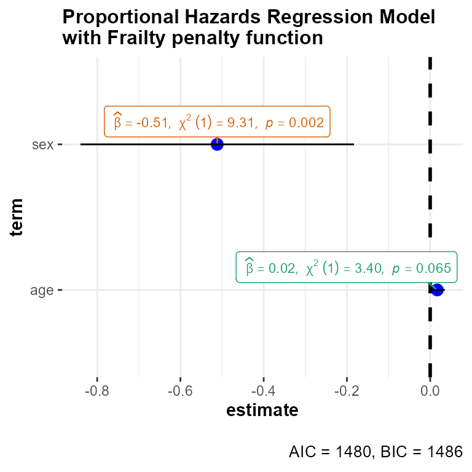
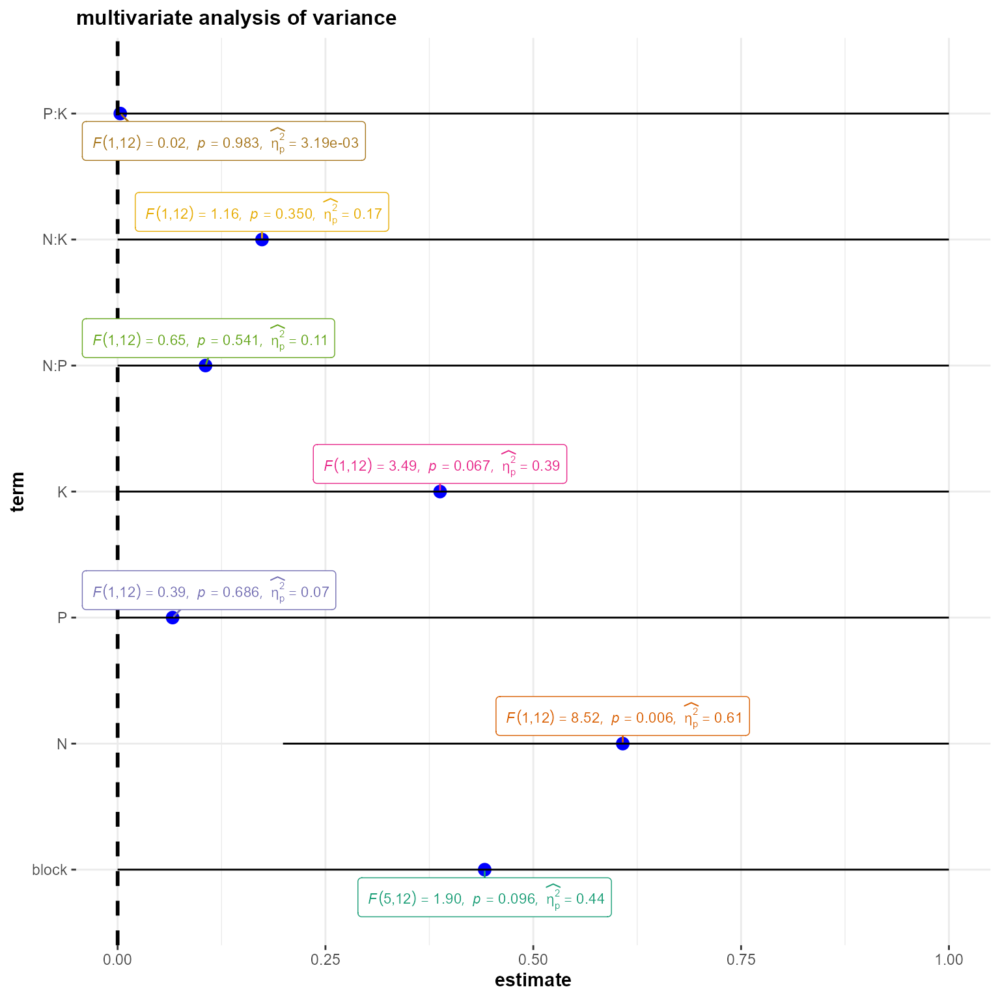

The function ggstatsplot::ggcoefstats generates dot-and-whisker plots for regression models saved in a tidy data frame. The tidy dataframes are prepared using the following packages: broom, broom.mixed, and parameters. Additionally, if available, the model summary indices are also extracted from the following packages: broom, broom.mixed, and performance.
In this vignette, we will see examples of how to use this function. We will try to cover as many classes of objects as possible. Unfortunately, there is no single dataset that will be helpful for carrying out all types of regression analyses and, therefore, we will use various datasets to explore data-specific hypotheses using regression models.
Note before: The following demo uses the pipe operator (%>%), so in case you are not familiar with this operator, here is a good explanation: http://r4ds.had.co.nz/pipes.html
General structure of the plots
Although the statistical models displayed in the plot may differ based on the class of models being investigated, there are few aspects of the plot that will be invariant across models:
The dot-whisker plot contains a dot representing the estimate and their confidence intervals (
95%is the default). The estimate can either be effect sizes (for tests that depend on theFstatistic) or regression coefficients (for tests witht, \(\chi^{2}\), andzstatistic), etc. The function will, by default, display a helpfulx-axis label that should clear up what estimates are being displayed. The confidence intervals can sometimes be asymmetric if bootstrapping was used.The caption will contain diagnostic information, if available, about models that can be useful for model selection: The smaller the Akaike’s Information Criterion (AIC) and the Bayesian Information Criterion (BIC) values, the “better” the model is.
The output of this function will be a
ggplot2object and, thus, it can be further modified (e.g., change themes, etc.) withggplot2functions.
Supported models
Most of the regression models that are supported in the underlying packages are also supported by ggcoefstats. For example-
aareg, anova, aov, aovlist, Arima, BFBayesFactor, bayesx, bayesGARCH, BBmm, BBreg, bcplm, betamfx, betaor, bglmerMod, bife, bigglm, biglm, blavaan, bmlm, blmerMod, bracl, brglm2, brmsfit, brmultinom, btergm, cch, cgam, cgamm, cglm, clm, clm2, clmm, clmm2, coeftest, complmrob, confusionMatrix, coxme, coxph, coxph.penal, cpglm, cpglmm, crch, crq, DirichReg, drc, emmGrid, epi.2by2, ergm, feis, felm, fitdistr, flexsurvreg, gam, Gam, gamlss, garch, geeglm, glmc, glmerMod, glmmTMB, gls, glht, glm, glmm, glmmadmb, glmmPQL, glmRob, glmrob, glmx, gmm, hurdle, ivreg, iv_robust, lavaan, lm, lm.beta, lmerMod, lmerModLmerTest, lmodel2, lmRob, lmrob, lm_robust, logitmfx, logitor, logitsf, LORgee, lqm, lqmm, lrm, manova, maov, margins, mcmc, mcmc.list, MCMCglmm, mclogit, mmclogit, mediate, metafor, metaplus, mixor, mjoint, mle2, mlm, multinom, negbin, negbinmfx, negbinirr, nlmerMod, nlrq, nlreg, nls, orcutt, orm, plm, poissonmfx, poissonirr, polr, ridgelm, rjags, rlm, rlmerMod, robmixglm, rq, rqss, semLm, semLme, slm, speedglm, speedlm, stanfit, stanreg, survreg, svyglm, svyolr, svyglm, tobit, truncreg, vgam, vglm, wbgee, wblm, zcpglm, zeroinfl, etc.
Examples of supported models
In the following examples, we will try out a number of regression models and, additionally, we will also see how we can change different aspects of the plot itself.
omnibus ANOVA (aov)
# setup set.seed(123) library(ggstatsplot) library(ggplot2) # model mod <- stats::aov(formula = rating ~ mpaa * genre, data = movies_long) # plot ggstatsplot::ggcoefstats( x = mod, effsize = "eta", # changing the effect size estimate being displayed partial = FALSE, # just eta-squared point.args = list(color = "red", size = 4, shape = 15), # changing the point geom package = "dutchmasters", # package from which color palette is to be taken palette = "milkmaid", # color palette for labels title = "omnibus ANOVA" # title for the plot ) + # further modification with the ggplot2 commands # note the order in which the labels are entered ggplot2::scale_y_discrete(labels = c("MPAA", "Genre", "Interaction term")) + ggplot2::labs(x = "effect size estimate (eta-squared)", y = NULL)

Note that we can also use this function for model selection. You can try out different models with the code below and see how the AIC and BIC values change.
# setup set.seed(123) library(ggstatsplot) # plot ggstatsplot::combine_plots( # model 1 ggstatsplot::ggcoefstats( x = stats::aov(formula = rating ~ mpaa, data = movies_long), title = "1. Only MPAA ratings" ), # model 2 ggstatsplot::ggcoefstats( x = stats::aov(formula = rating ~ genre, data = movies_long), title = "2. Only genre" ), # model 3 ggstatsplot::ggcoefstats( x = stats::aov(formula = rating ~ mpaa + genre, data = movies_long), title = "3. Additive effect of MPAA and genre" ), # model 4 ggstatsplot::ggcoefstats( x = stats::aov(formula = rating ~ mpaa * genre, data = movies_long), title = "4. Multiplicative effect of MPAA and genre" ), title.text = "Model selection using ggcoefstats" )

Anova with car package (anova)
# setup set.seed(123) library(car) library(ggstatsplot) # model mod <- car::Anova(stats::lm( formula = conformity ~ fcategory * partner.status, data = Moore, contrasts = list(fcategory = contr.sum, partner.status = contr.sum) )) # plot ggstatsplot::ggcoefstats( x = mod, title = "Anova with `car`" )

Anova with ez package
set.seed(123) library(ez) data(ANT) # run an ANOVA on the mean correct RT data. rt_anova <- suppressWarnings(ez::ezANOVA( data = ANT[ANT$error == 0, ], dv = rt, wid = subnum, within = cue, detailed = TRUE, return_aov = TRUE )) # plot ggstatsplot::ggcoefstats( x = rt_anova$aov, title = "Anova with `ez` package" )

linear model (lm)
# setup set.seed(123) # data df <- dplyr::filter( .data = ggstatsplot::movies_long, genre %in% c( "Action", "Action Comedy", "Action Drama", "Comedy", "Drama", "Comedy Drama" ) ) # plot ggstatsplot::ggcoefstats( x = stats::lm(formula = rating ~ genre, data = df), sort = "ascending", # sorting the terms of the model based on estimate values ggtheme = ggplot2::theme_gray(), # changing the default theme stats.label.color = c("#CC79A7", "darkgreen", "#0072B2", "black", "red"), title = "Movie ratings by their genre", subtitle = "Source: www.imdb.com" ) + # further modification with the ggplot2 commands # note the order in which the labels are entered ggplot2::scale_y_discrete(labels = c( "Comedy", "Action Comedy", "Action Drama", "Comedy Drama", "Drama" )) + ggplot2::labs(y = "Genre compared to Action movies)") + ggplot2::theme(axis.title.y = ggplot2::element_text(size = 14, face = "bold"))

linear mixed-effects model (lmer/lmerMod)
# set up library(lme4) library(ggstatsplot) set.seed(123) # lm model mod1 <- stats::lm(formula = scale(rating) ~ scale(budget), data = movies_long) # merMod model mod2 <- lme4::lmer( formula = scale(rating) ~ scale(budget) + (budget | genre), data = movies_long, control = lme4::lmerControl(calc.derivs = FALSE) ) # combining the two different plots ggstatsplot::combine_plots( # model 1: simple linear model ggstatsplot::ggcoefstats( x = mod1, title = "linear model", stats.label.color = "black", exclude.intercept = FALSE # show the intercept ) + ggplot2::labs(x = parse(text = "'standardized regression coefficient' ~italic(beta)")), # model 2: linear mixed-effects model ggstatsplot::ggcoefstats( x = mod2, title = "linear mixed-effects model", stats.label.color = "black", exclude.intercept = FALSE ) + ggplot2::labs( x = parse(text = "'standardized regression coefficient' ~italic(beta)"), y = "fixed effects" ), nrow = 2, title.text = "Relationship between movie budget and its IMDB rating" )

Note that for mixed-effects models, only the fixed effects are shown because there are no confidence intervals for random effects terms. In case, you would like to see these terms, you can enter the same object you entered as x argument to broomExtra::tidy_parameters:
# setup set.seed(123) library(lme4) library(broomExtra) # tidy output broomExtra::tidy_parameters( lme4::lmer( formula = scale(rating) ~ scale(budget) + (budget | genre), data = movies_long, control = lme4::lmerControl(calc.derivs = FALSE) ) ) #> # A tibble: 2 x 8 #> term estimate std.error conf.low conf.high statistic df.error p.value #> <chr> <dbl> <dbl> <dbl> <dbl> <dbl> <int> <dbl> #> 1 (Intercept) -0.0617 0.135 -0.327 0.204 -0.456 1573 0.649 #> 2 scale(budget) 0.105 0.0420 0.0227 0.187 2.50 1573 0.0124
analysis of factorial experiments (mixed)
# setup set.seed(123) library(afex) library(MEMSS) data("Machines", package = "MEMSS") # simple model with random-slopes for repeated-measures factor m1 <- afex::mixed( formula = score ~ Machine + (Machine | Worker), data = Machines ) #> Fitting one lmer() model. [DONE] #> Calculating p-values. [DONE] # suppress correlations among random effect parameters with || and expand_re = TRUE m2 <- afex::mixed( formula = score ~ Machine + (Machine || Worker), data = Machines, expand_re = TRUE ) #> Fitting one lmer() model. [DONE] #> Calculating p-values. [DONE] # plot ggstatsplot::combine_plots( ggstatsplot::ggcoefstats(m1, title = "example-1"), ggstatsplot::ggcoefstats(m2, title = "example-2"), title.text = "analysis of factorial experiments (using `afex`)" ) #> Can't extract residuals from model. #> Can't extract residuals from model.

Aalen’s additive regression model for censored data (aareg)
# setup library(survival) set.seed(123) # model afit <- survival::aareg( formula = Surv(time, status) ~ age + sex + ph.ecog, data = lung, dfbeta = TRUE ) # plot ggstatsplot::ggcoefstats( x = afit, title = "Aalen's additive regression model", subtitle = "(for censored data)", k = 3 )

multivariate generalized linear mixed models (MCMCglmm)
# setup set.seed(123) library(lme4) library(MCMCglmm) data(sleepstudy) # model mm0 <- MCMCglmm::MCMCglmm( fixed = scale(Reaction) ~ scale(Days), random = ~Subject, data = lme4::sleepstudy, nitt = 4000, pr = TRUE, verbose = FALSE ) # plot ggstatsplot::ggcoefstats( x = mm0, title = "multivariate generalized linear mixed model", conf.method = "HPDinterval", exclude.intercept = FALSE, robust = TRUE )

STAR Models with BayesX (bayesx)
# setup set.seed(111) library(R2BayesX) ## generate some data n <- 200 ## regressor dat <- data.frame(x = runif(n, -3, 3)) ## response dat$y <- with(dat, 1.5 + sin(x) + rnorm(n, sd = 0.6)) ## estimate models with bayesx REML and MCMC b1 <- R2BayesX::bayesx(y ~ sx(x), method = "REML", data = dat) # plot ggstatsplot::ggcoefstats( x = b1, title = "STAR Models with BayesX", exclude.intercept = FALSE )

robust linear mixed-effects models (rlmer)
Robust version of lmer (as implemented in robustlmm package) is also supported-
# setups set.seed(123) library(robustlmm) # model roblmm.mod <- robustlmm::rlmer( formula = scale(Reaction) ~ scale(Days) + (Days | Subject), data = sleepstudy, rho.sigma.e = psi2propII(smoothPsi, k = 2.28), rho.sigma.b = chgDefaults(smoothPsi, k = 5.11, s = 10) ) # plot ggstatsplot::ggcoefstats( x = roblmm.mod, title = "robust estimation of linear mixed-effects model", conf.level = 0.90 )

linear mixed-effects models with lmerTest (lmerModLmerTest)
# setup set.seed(123) library(lmerTest) # fit linear mixed model to the ham data: fm <- lmerTest::lmer( formula = Informed.liking ~ Gender + Information * Product + (1 | Consumer) + (1 | Consumer:Product), data = ham ) # plot ggstatsplot::ggcoefstats( x = fm, title = "linear mixed-effects models with `lmerTest`" )

non-linear mixed-effects model (nlmer/nlmerMod)
# data library(lme4) set.seed(123) startvec <- c(Asym = 200, xmid = 725, scal = 350) # model nm1 <- lme4::nlmer( formula = circumference ~ SSlogis(age, Asym, xmid, scal) ~ Asym | Tree, data = Orange, start = startvec ) # plot ggstatsplot::ggcoefstats( x = nm1, title = "non-linear mixed-effects model" )

non-linear least-squares model (nls)
So far we have been assuming a linear relationship between movie budget and rating. But what if we want to also explore the possibility of a non-linear relationship? In that case, we can run a non-linear least squares regression. Note that you need to choose some non-linear function, which will be based on prior exploratory data analysis (y ~ k/x + c implemented here, but you can try out other non-linear functions, e.g. Y ~ k * exp(-b*c)).
# setup set.seed(123) library(ggstatsplot) # model mod <- stats::nls( formula = rating ~ k / budget + c, # try toying around with the form of non-linear function data = movies_long, start = list(k = 1, c = 0) ) # plot ggstatsplot::ggcoefstats( x = mod, title = "non-linear least squares regression", subtitle = "Non-linear relationship between budget and rating" )

This analysis shows that there is indeed a possible non-linear association between rating and budget (non-linear regression term k is significant), at least with the particular non-linear function we used.
conditional generalized linear models for clustered data (cglm)
# setup set.seed(123) library(cglm) data(teenpov) # model fit.ide <- cglm::cglm( method = "ts", formula = hours ~ nonpov + inschool + spouse + age + mother, data = teenpov, id = "ID", link = "identity" ) # plot ggstatsplot::ggcoefstats( x = fit.ide, title = "conditional generalized linear models for clustered data" )

joint model to time-to-event data and multivariate longitudinal data (mjoint)
# setup set.seed(123) library(joineRML) data(heart.valve) # data hvd <- heart.valve[!is.na(heart.valve$log.grad) & !is.na(heart.valve$log.lvmi) & heart.valve$num <= 50, ] # model fit <- joineRML::mjoint( formLongFixed = list( "grad" = log.grad ~ time + sex + hs, "lvmi" = log.lvmi ~ time + sex ), formLongRandom = list( "grad" = ~ 1 | num, "lvmi" = ~ time | num ), formSurv = Surv(fuyrs, status) ~ age, data = hvd, inits = list("gamma" = c(0.11, 1.51, 0.80)), timeVar = "time" ) # extract the survival fixed effects and plot them ggstatsplot::ggcoefstats( x = fit, conf.level = 0.99, exclude.intercept = FALSE, component = "longitudinal", package = "yarrr", palette = "basel", title = "joint model to time-to-event data and multivariate longitudinal data" ) #> Parameters can't be retrieved for objects of class 'simpleError'. #> Parameters can't be retrieved for objects of class 'simpleError'.

stationary linear model (slm)
# setup set.seed(123) library(slm) data("shan") # model mod <- slm( myformula = shan$PM_Xuhui ~ ., data = shan, method_cov_st = "fitAR", model_selec = -1 ) # plot ggstatsplot::ggcoefstats( x = mod, conf.level = 0.90, title = "stationary linear models", package = "rcartocolor", palette = "Vivid" )

generalized linear model (glm)
In all the analyses carried out thus far, the outcome variable (y in y ~ x) has been continuous. In case the outcome variable is nominal/categorical/factor, we can use the generalized form of linear model that works even if the response is a numeric vector or a factor vector, etc.
# setup library(ggstatsplot) set.seed(123) # having a look at the Titanic dataset df <- as.data.frame(Titanic) # model mod <- stats::glm( formula = Survived ~ Sex + Age, data = df, weights = df$Freq, family = stats::binomial(link = "logit") ) # plot ggstatsplot::ggcoefstats( x = mod, ggtheme = ggthemes::theme_economist_white(), ggstatsplot.layer = FALSE, title = "generalized linear model (glm)", vline.args = list(color = "red", linetype = "solid"), stats.label.color = c("orangered", "dodgerblue") ) #> Can't calculate log-loss.

Note: The exact statistic will depend on the family used for glm models: Some families will have a t statistic associated with them, while others a z statistic. The function will figure this out for you.
# creating dataframes to use for regression analyses set.seed(123) library(ggstatsplot) # dataframe #1 df.counts <- data.frame( treatment = gl(n = 3, k = 3, length = 9), outcome = gl(n = 3, k = 1, length = 9), counts = c(18, 17, 15, 20, 10, 20, 25, 13, 12) ) %>% tibble::as_tibble(.) # dataframe #2 df.clotting <- data.frame( u = c(5, 10, 15, 20, 30, 40, 60, 80, 100), lot1 = c(118, 58, 42, 35, 27, 25, 21, 19, 18), lot2 = c(69, 35, 26, 21, 18, 16, 13, 12, 12) ) %>% tibble::as_tibble(.) # dataframe #3 x1 <- stats::rnorm(50) y1 <- stats::rpois(n = 50, lambda = exp(1 + x1)) df.3 <- data.frame(x = x1, y = y1) %>% tibble::as_tibble(.) # dataframe #4 x2 <- stats::rnorm(50) y2 <- rbinom( n = 50, size = 1, prob = stats::plogis(x2) ) df.4 <- data.frame(x = x2, y = y2) %>% tibble::as_tibble(.) # combining all plots in a single plot ggstatsplot::combine_plots( # Family: Poisson ggstatsplot::ggcoefstats( x = stats::glm( formula = counts ~ outcome + treatment, data = df.counts, family = stats::poisson(link = "log") ), title = "Family: Poisson", stats.label.color = "black" ), # Family: Gamma ggstatsplot::ggcoefstats( x = stats::glm( formula = lot1 ~ log(u), data = df.clotting, family = stats::Gamma(link = "inverse") ), title = "Family: Gamma", stats.label.color = "black" ), # Family: Quasi ggstatsplot::ggcoefstats( x = stats::glm( formula = y ~ x, family = quasi(variance = "mu", link = "log"), data = df.3 ), title = "Family: Quasi", stats.label.color = "black" ), # Family: Quasibinomial ggstatsplot::ggcoefstats( x = stats::glm( formula = y ~ x, family = stats::quasibinomial(link = "logit"), data = df.4 ), title = "Family: Quasibinomial", stats.label.color = "black" ), # Family: Quasipoisson ggstatsplot::ggcoefstats( x = stats::glm( formula = y ~ x, family = stats::quasipoisson(link = "log"), data = df.4 ), title = "Family: Quasipoisson", stats.label.color = "black" ), # Family: Gaussian ggstatsplot::ggcoefstats( x = stats::glm( formula = Sepal.Length ~ Species, family = stats::gaussian(link = "identity"), data = iris ), title = "Family: Gaussian", stats.label.color = "black" ), ncol = 2, title.text = "Exploring models with different `glm` families", title.color = "blue" )

modified fitting for generalized linear models (glm2)
# setup set.seed(123) library(glm2) y <- c(1, 1, 1, 0) # model fit1 <- glm2::glm2( formula = y ~ 1, family = binomial(link = "logit"), control = glm.control(trace = FALSE) ) # plot ggstatsplot::ggcoefstats( x = fit1, title = "greater stability for fitting generalized linear models", exclude.intercept = FALSE )

Fit Generalized Estimating Equations with geepack (geeglm)
# setup set.seed(123) library(geepack) data(dietox) dietox$Cu <- as.factor(dietox$Cu) mf <- formula(Weight ~ Cu * (Time + I(Time^2) + I(Time^3))) # model gee1 <- geeglm( mf, data = dietox, id = Pig, family = poisson("identity"), corstr = "ar1" ) # plot ggcoefstats( x = gee1, title = "Fit Generalized Estimating Equations", package = "ggsci", palette = "category20c_d3" )

ordinal regression model (orm)
# setup library(rms) set.seed(123) # data n <- 100 y <- round(runif(n), 2) x1 <- sample(c(-1, 0, 1), n, TRUE) x2 <- sample(c(-1, 0, 1), n, TRUE) # model g <- rms::orm(y ~ x1 + x2, eps = 1e-5) # plot ggstatsplot::ggcoefstats( x = g, title = "Ordinal Regression Model" )

logistic regression model (lrm)
# setup library(rms) set.seed(123) # data n <- 500 x1 <- runif(n, -1, 1) x2 <- runif(n, -1, 1) x3 <- sample(0:1, n, TRUE) y <- x1 + 0.5 * x2 + x3 + rnorm(n) y <- as.integer(cut2(y, g = 10)) dd <- datadist(x1, x2, x3) options(datadist = "dd") # model f <- rms::lrm(y ~ x1 + pol(x2, 2) + x3, eps = 1e-7) # eps to check against rstan # plot ggstatsplot::ggcoefstats( x = f, title = "Logistic Regression Model", package = "ggsci", palette = "category20c_d3" ) #> Can't extract residuals from model. #> Can't calculate log-loss.

Two-Stage Least Squares Instrumental Variables Regression (iv_robust)
# setup set.seed(123) library(fabricatr) library(estimatr) # data dat <- fabricate( N = 40, Y = rpois(N, lambda = 4), Z = rbinom(N, 1, prob = 0.4), D = Z * rbinom(N, 1, prob = 0.8), X = rnorm(N), G = sample(letters[1:4], N, replace = TRUE) ) # instrument for treatment `D` with encouragement `Z` mod <- estimatr::iv_robust(formula = Y ~ D + X | Z + X, data = dat) # plot ggstatsplot::ggcoefstats( x = mod, exclude.intercept = FALSE, title = "Two-Stage Least Squares Instrumental Variables Regression" )

ordinary least squares with robust standard errors (lm_robust)
# for reproducibility set.seed(123) library(estimatr) # model mod <- lm_robust(formula = mpg ~ gear + wt + cyl, data = mtcars) # plot ggstatsplot::ggcoefstats( x = mod, title = "ordinary least squares with robust standard errors" )

fitting negative binomial GLM (negbin)
Just to demonstrate that this can be done, let’s also flip the axes:
# setup library(MASS) library(lme4) set.seed(101) # data dd <- expand.grid( f1 = factor(1:3), f2 = LETTERS[1:2], g = 1:9, rep = 1:15, KEEP.OUT.ATTRS = FALSE ) mu <- 5 * (-4 + with(dd, as.integer(f1) + 4 * as.numeric(f2))) dd$y <- rnbinom(nrow(dd), mu = mu, size = 0.5) # model m.glm <- MASS::glm.nb(formula = y ~ f1 * f2, data = dd) # plot ggstatsplot::ggcoefstats( x = m.glm, title = "generalized linear model (GLM) for the negative binomial family", exclude.intercept = FALSE, only.significant = TRUE, stats.label.args = list(size = 2.5, direction = "both") ) + ggplot2::coord_flip()

generalized linear mixed-effects model (glmer/glmerMod)
# setup set.seed(123) library(lme4) # model mod <- lme4::glmer( formula = Survived ~ Sex + Age + (Sex + Age | Class), data = ggstatsplot::Titanic_full, family = stats::binomial(link = "logit"), control = lme4::glmerControl( optimizer = "Nelder_Mead", calc.derivs = FALSE, boundary.tol = 1e-7 ) ) # plot ggstatsplot::ggcoefstats( x = mod, title = "generalized linear mixed-effects model", exponentiate = TRUE ) #> Can't calculate log-loss.

Fitting Generalized Linear Mixed Models using MCML (glmm)
# setup library(glmm) data(BoothHobert) set.seed(1234) # model mod.mcml1 <- glmm( fixed = y ~ 0 + x1, random = list(y ~ 0 + z1), varcomps.names = c("z1"), data = BoothHobert, family.glmm = bernoulli.glmm, m = 100, doPQL = TRUE ) # plot ggstatsplot::ggcoefstats( x = mod.mcml1, title = "Fitting Generalized Linear Mixed Models using MCML" )

fitting negative binomial GLMM (glmer.nb)
# setup library(MASS) library(lme4) set.seed(101) # data dd <- expand.grid( f1 = factor(1:3), f2 = LETTERS[1:2], g = 1:9, rep = 1:15, KEEP.OUT.ATTRS = FALSE ) mu <- 5 * (-4 + with(dd, as.integer(f1) + 4 * as.numeric(f2))) dd$y <- rnbinom(nrow(dd), mu = mu, size = 0.5) # model m.nb <- lme4::glmer.nb(formula = y ~ f1 * f2 + (1 | g), data = dd) # plot ggstatsplot::ggcoefstats( x = m.nb, title = "generalized linear mixed-effects model (GLMM) for the negative binomial family", exclude.intercept = FALSE ) #> Random effect variances not available. Returned R2 does not account for random effects.

Compound Poisson Generalized Linear Models (cpglm)
# set up set.seed(123) library(cplm) # model mod <- cplm::cpglm( formula = RLD ~ factor(Zone) * factor(Stock), data = FineRoot ) # plot ggstatsplot::ggcoefstats( x = mod, title = "Compound Poisson Generalized Linear Models" )

Compound Poisson Generalized Linear Mixed Models (cpglmm)
# set up set.seed(123) library(cplm) # model mod <- cpglmm( formula = RLD ~ Stock + Spacing + (1 | Plant), data = FineRoot ) # plot ggstatsplot::ggcoefstats( x = mod, title = "Compound Poisson Generalized Linear Mixed Models" )

Bayesian Compound Poisson Linear Models (bcplm)
# set up set.seed(123) library(cplm) # model mod <- bcplm( formula = RLD ~ factor(Zone) * factor(Stock), data = FineRoot, tune.iter = 2000, n.iter = 6000, n.burnin = 1000, n.thin = 5 ) #> Tuning phase... #> Acceptance rate: min(45.00%), mean(50.38%), max(60.00%) #> ----------------------------------------- #> Start Markov chain 1 #> Iteration: 3000 #> Acceptance rate: min(44.90%), mean(48.88%), max(52.50%) #> Iteration: 6000 #> Acceptance rate: min(45.05%), mean(48.90%), max(52.22%) #> ----------------------------------------- #> Start Markov chain 2 #> Iteration: 3000 #> Acceptance rate: min(45.40%), mean(49.54%), max(54.03%) #> Iteration: 6000 #> Acceptance rate: min(46.25%), mean(49.22%), max(53.90%) #> ----------------------------------------- #> Start Markov chain 3 #> Iteration: 3000 #> Acceptance rate: min(45.80%), mean(49.35%), max(53.43%) #> Iteration: 6000 #> Acceptance rate: min(46.05%), mean(49.18%), max(53.33%) #> ----------------------------------------- #> Markov Chain Monte Carlo ends! # plot ggstatsplot::ggcoefstats( x = mod, title = "Bayesian Compound Poisson Linear Models" )

Zero-inflated Compound Poisson Generalized Linear Models (zcpglm)
# set up set.seed(123) library(cplm) da <- subset(AutoClaim, IN_YY == 1) # use data in the Yip and Yau paper da <- transform(da, CLM_AMT5 = CLM_AMT5 / 1000, INCOME = INCOME / 10000) # model mod <- zcpglm( formula = CLM_AMT5 ~ CAR_USE + MARRIED + AREA + MVR_PTS || MVR_PTS + INCOME, data = da ) # plot ggstatsplot::ggcoefstats( x = mod, title = "Zero-inflated Compound Poisson Generalized Linear Models", standardize = TRUE )

Zero-Inflated Count Data Regression (zeroinfl)
# setup set.seed(123) library(pscl) # data data("bioChemists", package = "pscl") # model mod <- pscl::zeroinfl( formula = art ~ . | 1, data = bioChemists, dist = "negbin" ) # plot ggstatsplot::ggcoefstats( x = mod, exclude.intercept = FALSE, title = "Zero-Inflated Count Data Regression" )

Vector Generalized Additive Models (vgam)
# setup set.seed(123) library(VGAM) pneumo <- transform(pneumo, let = log(exposure.time)) # model mod <- vgam( cbind(normal, mild, severe) ~ s(let), cumulative(parallel = TRUE), data = pneumo, trace = FALSE ) # plot ggstatsplot::ggcoefstats( x = mod, title = "Vector Generalized Additive Models" )

Vector Generalized Linear Models (vglm)
# setup set.seed(123) library(VGAM) pneumo <- transform(pneumo, let = log(exposure.time)) # model mod <- vglm( formula = cbind(normal, mild, severe) ~ let, family = multinomial, data = pneumo ) # plot ggstatsplot::ggcoefstats( x = mod, title = "Vector Generalized Linear Models", exclude.intercept = FALSE )

Constrained Generalized Additive Model Fitting (cgam)
# setup set.seed(123) library(cgam) data(cubic) # model m <- cgam(formula = y ~ incr.conv(x), data = cubic) # plot ggstatsplot::ggcoefstats( x = m, title = "Constrained Generalized Additive Model Fitting", exclude.intercept = FALSE )

Constrained Generalized Additive Mixed-Effects Model Fitting (cgamm)
# setup set.seed(123) library(cgam) # simulate a balanced data set with 30 clusters # each cluster has 30 data points n <- 30 m <- 30 # the standard deviation of between cluster error terms is 1 # the standard deviation of within cluster error terms is 2 sige <- 1 siga <- 2 # generate a continuous predictor x <- 1:(m * n) for (i in 1:m) { x[(n * (i - 1) + 1):(n * i)] <- round(runif(n), 3) } # generate a group factor group <- trunc(0:((m * n) - 1) / n) + 1 # generate the fixed-effect term mu <- 10 * exp(10 * x - 5) / (1 + exp(10 * x - 5)) # generate the random-intercept term asscosiated with each group avals <- rnorm(m, 0, siga) # generate the response y <- 1:(m * n) for (i in 1:m) { y[group == i] <- mu[group == i] + avals[i] + rnorm(n, 0, sige) } # use REML method to fit the model ans <- cgamm(formula = y ~ s.incr(x) + (1 | group), reml = TRUE) # plot ggstatsplot::ggcoefstats( x = ans, title = "Constrained Generalized Additive Mixed-Effects Model Fitting", exclude.intercept = FALSE )

Hurdle Models for Count Data Regression (hurdle)
# setup set.seed(123) library(pscl) data("bioChemists", package = "pscl") # geometric-poisson fm_hp2 <- pscl::hurdle( formula = art ~ ., data = bioChemists, zero = "geometric" ) # plot ggstatsplot::ggcoefstats( x = fm_hp2, only.significant = TRUE, exclude.intercept = FALSE, conf.level = 0.99, title = "Hurdle Models for Count Data Regression" ) #> Warning: Number of labels is greater than default palette color count. #> Try using another color `palette` (and/or `package`).

beta-binomial mixed-effects model (BBmm)
# setup if (isFALSE("PROreg" %in% installed.packages())) { install.packages("https://cran.r-project.org/src/contrib/Archive/PROreg/PROreg_1.0.tar.gz", repos = NULL, type = "source" ) } library(PROreg) set.seed(123) # defining the parameters k <- 100 m <- 10 phi <- 0.5 beta <- c(1.5, -1.1) sigma <- 0.5 # simulating the covariate and random effects x <- runif(k, 0, 10) X <- model.matrix(~x) z <- as.factor(rBI(k, 4, 0.5, 2)) Z <- model.matrix(~ z - 1) u <- rnorm(5, 0, sigma) # the linear predictor and simulated response variable eta <- beta[1] + beta[2] * x + crossprod(t(Z), u) p <- 1 / (1 + exp(-eta)) y <- rBB(k, m, p, phi) dat <- data.frame(cbind(y, x, z)) dat$z <- as.factor(dat$z) # apply the model mod <- PROreg::BBmm( fixed.formula = y ~ x, random.formula = ~z, m = m, data = dat ) #> Iteration number: 1 #> Iteration number: 2 #> Iteration number: 3 #> Iteration number: 4 #> Iteration number: 5 # plot ggstatsplot::ggcoefstats( x = mod, exclude.intercept = FALSE, title = "beta-binomial mixed-effects model" )

beta-binomial logistic regression model (BBreg)
# setup set.seed(18) library(PROreg) # we simulate a covariate, fix the paramters of the beta-binomial # distribution and simulate a response variable. # Then we apply the model, and try to get the same values. k <- 1000 m <- 10 x <- rnorm(k, 5, 3) beta <- c(-10, 2) p <- 1 / (1 + exp(-(beta[1] + beta[2] * x))) phi <- 1.2 y <- rBB(k, m, p, phi) # model model <- BBreg(y ~ x, m) # plot ggstatsplot::ggcoefstats( x = model, exclude.intercept = FALSE, title = "beta-binomial logistic regression model" )

binary choice models with fixed effects (bife)
# setup set.seed(123) library(bife) dataset <- psid # binary choice models with fixed effects mod <- bife( LFP ~ I(AGE^2) + log(INCH) + KID1 + KID2 + KID3 + factor(TIME) | ID, dataset ) # plot ggstatsplot::ggcoefstats( x = mod, title = "binary choice models with fixed effects" ) #> Warning: Number of labels is greater than default palette color count. #> Try using another color `palette` (and/or `package`).

Dirichlet regression model (DirichReg)
# setup set.seed(123) library(DirichletReg) # data ALake <- ArcticLake ALake$Y <- DR_data(ALake[, 1:3]) # fit a quadratic Dirichlet regression models ("common") mod <- DirichReg(Y ~ depth + I(depth^2), ALake) # plot ggstatsplot::ggcoefstats( x = mod, title = "Dirichlet Regression" )

robust generalized linear models (robmixglm)
# setup set.seed(123) library(robmixglm) library(MASS) data(forbes) # model forbes.robustmix <- robmixglm(100 * log10(pres) ~ bp, data = forbes) # plot ggstatsplot::ggcoefstats( x = forbes.robustmix, title = "robust generalized linear models" )

generalized linear models with extra parameters (glmx)
# setup library(glmx) library(MASS) set.seed(1) d <- data.frame(x = runif(200, -1, 1)) d$y <- rnbinom(200, mu = exp(0 + 3 * d$x), size = 1) # model m_nb1 <- glmx( formula = y ~ x, data = d, family = negative.binomial, xlink = "log", xstart = 0 ) ggstatsplot::ggcoefstats( x = m_nb1, exclude.intercept = FALSE, title = "Generalized Linear Models with Extra Parameters" )

generalized linear mixed model trees (glmertree)
# setup set.seed(123) library(glmertree) data("DepressionDemo", package = "glmertree") # fit normal linear regression LMM tree for continuous outcome lt <- glmertree::lmertree( formula = depression ~ treatment | cluster | age + anxiety + duration, data = DepressionDemo ) # fit logistic regression GLMM tree for binary outcome gt <- glmertree::glmertree( formula = depression_bin ~ treatment | cluster | age + anxiety + duration, data = DepressionDemo ) # plot ggstatsplot::combine_plots( ggstatsplot::ggcoefstats( x = lt$lmer, title = "normal linear regression LMM tree for continuous outcome" ), ggstatsplot::ggcoefstats( x = lt$lmer, title = "logistic regression GLMM tree for binary outcome" ) )

generalized linear mixed models using Penalized Quasi-Likelihood (glmmPQL)
# setup set.seed(123) library(MASS) library(nlme) # model mod <- MASS::glmmPQL( fixed = y ~ trt + I(week > 2), random = ~ 1 | ID, family = binomial, data = bacteria, verbose = FALSE ) # plot ggstatsplot::ggcoefstats( x = mod, title = "generalized linear mixed models \nusing Penalized Quasi-Likelihood", exclude.intercept = FALSE ) #> Can't calculate log-loss.

generalized linear mixed models using Template Model Builder (glmmTMB)
glmmTMB package allows for flexibly fitting generalized linear mixed models (GLMMs) and extensions. Model objects from this package are also supported.
# set up library(glmmTMB) library(lme4) set.seed(123) # model mod <- glmmTMB::glmmTMB( formula = Reaction ~ Days + (Days | Subject), data = sleepstudy, family = glmmTMB::truncated_poisson() ) # plotting the model ggstatsplot::ggcoefstats( x = mod, conf.method = "uniroot", title = "generalized linear mixed models using Template Model Builder" )

Another example (given the number of terms, let’s only display labels for significant effects):
# setup set.seed(123) library(glmmTMB) data(Salamanders) # model zipm3 <- glmmTMB(count ~ spp * mined + (1 | site), zi = ~ spp * mined, data = Salamanders, family = "poisson" ) # plot ggstatsplot::ggcoefstats( x = zipm3, package = "palettesForR", palette = "Inkscape", only.significant = TRUE )

generalized linear mixed models using AD Model Builder (glmmadmb)
Another option is to use glmmadmb package.
# setup if (isFALSE("glmmADMB" %in% installed.packages())) { install.packages("glmmADMB", repos = c( "http://glmmadmb.r-forge.r-project.org/repos", getOption("repos") ), type = "source" ) } library(glmmADMB) # simulate values set.seed(101) d <- data.frame(f = factor(rep(LETTERS[1:10], each = 10)), x = runif(100)) u <- rnorm(10, sd = 2) d$eta <- with(d, u[f] + 1 + 4 * x) pz <- 0.3 zi <- rbinom(100, size = 1, prob = pz) d$y <- ifelse(zi, 0, rpois(100, lambda = exp(d$eta))) # fit zipmodel <- glmmADMB::glmmadmb( formula = y ~ x + (1 | f), data = d, family = "poisson", zeroInflation = TRUE ) # plotting the model ggstatsplot::ggcoefstats( x = zipmodel, title = "generalized linear mixed models using AD Model Builder" )

cumulative link models (clm)
# for reproducibility set.seed(123) library(ordinal) # model (to speed up calculations, we will use just 10% of the dataset) mod <- ordinal::clm(formula = rating ~ temp * contact, data = wine) # plot ggstatsplot::ggcoefstats( x = mod, stats.label.color = "black", title = "cumulative link model (clm)", subtitle = "(using `ordinal` package)" ) + ggplot2::labs(x = "logit regression coefficient", y = NULL) #> Can't extract residuals from model. #> Can't calculate log-loss. #> Can't calculate proper scoring rules for ordinal, multinomial or cumulative link models.

cumulative link models - older version (clm2)
# for reproducibility set.seed(123) library(ordinal) library(MASS) data(housing, package = "MASS") # data tab26 <- with(soup, table("Product" = PROD, "Response" = SURENESS)) dimnames(tab26)[[2]] <- c("Sure", "Not Sure", "Guess", "Guess", "Not Sure", "Sure") dat26 <- expand.grid(sureness = as.factor(1:6), prod = c("Ref", "Test")) dat26$wghts <- c(t(tab26)) # model mod <- ordinal::clm2( location = sureness ~ prod, scale = ~prod, data = dat26, weights = wghts, link = "logistic" ) # plot ggstatsplot::ggcoefstats( x = mod, title = "older version of `clm`" ) #> Can't extract residuals from model. #> Can't calculate log-loss. #> Can't calculate proper scoring rules for ordinal, multinomial or cumulative link models.

cumulative link mixed models (clmm)
# for reproducibility set.seed(123) library(ordinal) # model mod <- clmm(formula = rating ~ temp + contact + (1 | judge), data = wine) # to speed up calculations, we will use just 10% of the dataset ggstatsplot::ggcoefstats( x = mod, title = "cumulative link mixed model (clmm)", subtitle = "(using `ordinal` package)" ) + ggplot2::labs( x = "coefficient from ordinal mixed-effects regression", y = "fixed effects" )

cumulative link mixed models - older version (clmm2)
# for reproducibility set.seed(123) library(ordinal) # data dat <- subset(soup, as.numeric(as.character(RESP)) <= 24) dat$RESP <- dat$RESP[drop = TRUE] # model m1 <- ordinal::clmm2( SURENESS ~ PROD, random = RESP, data = dat, link = "probit", Hess = TRUE, method = "ucminf", threshold = "symmetric" ) # plot ggstatsplot::ggcoefstats( x = m1, title = "older version of cumulative link mixed models" ) #> Can't extract residuals from model. #> Can't calculate log-loss. #> Can't calculate proper scoring rules for ordinal, multinomial or cumulative link models.

marginal effects estimation (margins)
# setup set.seed(123) library(margins) # logit model mod_log <- glm(am ~ cyl + hp + wt, data = mtcars, family = binomial) # convert to marginal effects with margins::margins() marg_log <- margins(mod_log) # plot ggstatsplot::ggcoefstats( x = marg_log, title = "marginal effects estimation" )
 ## Linear Regression with Interval-Censored Dependent Variable (
## Linear Regression with Interval-Censored Dependent Variable (semLm)
# setup set.seed(123) library(smicd) # Load and prepare data data <- Exam classes <- c(1, 1.5, 2.5, 3.5, 4.5, 5.5, 6.5, 7.7, 8.5, Inf) data$examsc.class <- cut(data$examsc, classes) # run model with random intercept and default settings model <- semLm( formula = examsc.class ~ standLRT + schavg, data = data, classes = classes ) # plot ggstatsplot::ggcoefstats( x = model, title = "Linear Regression with \nInterval-Censored Dependent Variable" ) #> Note: No confidence intervals available for regression coefficients,so whiskers in the plot will be skipped.

Linear Mixed Regression with Interval-Censored Dependent Variable (semLme)
# setup set.seed(123) library(smicd) # Load and prepare data data <- Exam classes <- c(1, 1.5, 2.5, 3.5, 4.5, 5.5, 6.5, 7.7, 8.5, Inf) data$examsc.class <- cut(data$examsc, classes) # run model with random intercept and default settings model1 <- semLme( formula = examsc.class ~ standLRT + schavg + (1 | school), data = data, classes = classes ) # plot ggstatsplot::ggcoefstats( x = model1, title = "Linear Mixed Regression with \nInterval-Censored Dependent Variable" ) #> Note: No confidence intervals available for regression coefficients,so whiskers in the plot will be skipped.

Mixed-Effects Ordinal Regression Analysis (mixor)
# setup set.seed(123) library(mixor) data("SmokingPrevention") # data frame must be sorted by id variable SmokingPrevention <- SmokingPrevention[order(SmokingPrevention$class), ] # school model mod <- mixor( formula = thksord ~ thkspre + cc + tv + cctv, data = SmokingPrevention, id = school, link = "logit" ) # plot ggstatsplot::ggcoefstats( x = mod, title = "Mixed-Effects Ordinal Regression Analysis", exclude.intercept = FALSE )

bias reduction in generalized linear models (brglm2)
Note that we can also choose to display labels only for the significant effects. This can be helpful when a large number of regression coefficients are to be displayed in a single plot and we would like to focus only on the significant ones.
# setup set.seed(123) library(brglm2) data("lizards") # fit the model using maximum likelihood mean bias-reduced fit: lizardsBR_mean <- stats::glm( formula = cbind(grahami, opalinus) ~ height + diameter + light + time, family = binomial(logit), data = lizards, method = "brglmFit" ) # plot ggstatsplot::ggcoefstats( x = lizardsBR_mean, only.significant = TRUE, title = "bias reduction in generalized linear models" ) #> Can't calculate log-loss. #> Can't calculate proper scoring rules for models without integer response values. #> `performance_pcp()` only works for models with binary response values.

Bias Reduction For Multinomial Response Models Using The Poisson Trick (brmultinom)
# setup set.seed(123) library(MASS) library(brglm2) data("housing", package = "MASS") # Maximum likelihood using brmultinom with baseline category 'Low' houseML1 <- brglm2::brmultinom( formula = Sat ~ Infl + Type + Cont, weights = Freq, data = housing, type = "ML", ref = 1 ) # plot ggstatsplot::ggcoefstats( x = houseML1, title = "Bias Reduction For Multinomial Response Models Using The Poisson Trick" ) #> Can't calculate proper scoring rules for ordinal, multinomial or cumulative link models. #> Warning: Number of labels is greater than default palette color count. #> Try using another color `palette` (and/or `package`).

bias reduction for adjacent category logit models (bracl)
# setup set.seed(123) library(brglm2) data("stemcell") # bias reduction for adjacent category logit models # for ordinal responses using the Poisson trick fit_bracl <- brglm2::bracl( formula = research ~ as.numeric(religion) + gender, weights = frequency, data = stemcell, type = "ML" ) # plot ggstatsplot::ggcoefstats( x = fit_bracl, conf.int = FALSE, title = "bias reduction for adjacent category logit models" ) #> Can't calculate proper scoring rules for ordinal, multinomial or cumulative link models.

generalized linear models subject to population constraints
# setup set.seed(123) library(glmc) # data n <- rbind(c(5903, 230), c(5157, 350)) mat <- matrix(0, nrow = sum(n), ncol = 2) mat <- rbind( matrix(1, nrow = n[1, 1], ncol = 1) %*% c(0, 0), matrix(1, nrow = n[1, 2], ncol = 1) %*% c(0, 1), matrix(1, nrow = n[2, 1], ncol = 1) %*% c(1, 0), matrix(1, nrow = n[2, 2], ncol = 1) %*% c(1, 1) ) # specifying the population constraints gfr <- .06179 * matrix(1, nrow = nrow(mat), ncol = 1) g <- matrix(1, nrow = nrow(mat), ncol = 1) amat <- matrix(mat[, 2] * g - gfr, ncol = 1) # defining constraints in the data frame. hrh <- data.frame(birth = mat[, 2], child = mat[, 1], constraints = amat) # model gfit <- glmc::glmc( formula = birth ~ child, data = hrh, family = "binomial", emplik.method = "Owen", control = glmc::glmc.control( trace.optim = 0, trace.glm = FALSE, maxit.glm = 10, maxit.weights = 200, itertrace.weights = TRUE, gradtol.weights = 10^(-6) ) ) #> [1] -0.02656434 -14.43904679 1320.26413390 1.00000000 #> [1] -0.0220031 -15.3239529 375.8086391 1.0000000 #> [1] -0.0217611 -15.3261430 18.0697997 1.0000000 #> [1] -0.02176048 -15.32614305 0.04572550 1.00000000 #> [1] -2.176048e-02 -1.532614e+01 2.958267e-07 9.000000e+00 # plot ggstatsplot::ggcoefstats( x = gfit, title = "generalized linear models subject to population constraints", exclude.intercept = FALSE )

Bayesian linear linear mixed-effects models (blmerMod)
# for reproducibility set.seed(123) library(blme) # data data(sleepstudy) sleepstudy$mygrp <- sample(1:5, size = 180, replace = TRUE) sleepstudy$mysubgrp <- NA for (i in 1:5) { filter_group <- sleepstudy$mygrp == i sleepstudy$mysubgrp[filter_group] <- sample(1:30, size = sum(filter_group), replace = TRUE) } # model mod <- blme::blmer( formula = scale(Reaction) ~ scale(Days) + (1 + Days | Subject), data = sleepstudy, cov.prior = NULL, REML = FALSE ) # plot ggstatsplot::ggcoefstats( x = mod, title = "Bayesian linear mixed-effects models", exclude.intercept = FALSE )

Bayesian generalized linear mixed-effects models (bglmerMod)
# for reproducibility set.seed(123) library(blme) # data y <- c(28, 8, -3, 7, -1, 1, 18, 12) sigma <- c(15, 10, 16, 11, 9, 11, 10, 18) g <- 1:8 # model schools <- blme::blmer( y ~ 1 + (1 | g), resid.prior = point, cov.prior = NULL, REML = FALSE, weights = 1 / sigma^2 ) # plot ggstatsplot::ggcoefstats( x = schools, exclude.intercept = FALSE, title = "Bayesian generalized linear mixed-effects models" ) #> Random effect variances not available. Returned R2 does not account for random effects.

ordered logistic or probit regression (polr)
# polr model set.seed(123) library(MASS) polr.mod <- MASS::polr( formula = Sat ~ Infl + Type + Cont, weights = Freq, data = housing ) # plot ggstatsplot::ggcoefstats( x = polr.mod, coefficient.type = "both", title = "ordered logistic or probit regression", subtitle = "using `MASS` package" ) #> Can't extract residuals from model. #> Can't calculate log-loss. #> Can't calculate proper scoring rules for ordinal, multinomial or cumulative link models.

multiple linear regression models (mlm)
# model (converting all numeric columns in data to z-scores) mod <- stats::lm( formula = cbind(mpg, disp) ~ wt, data = purrr::modify_if(.x = mtcars, .p = is.numeric, ~ { as.numeric(scale(.x)) }) ) # plot ggstatsplot::ggcoefstats( x = mod, title = "multiple linear regression models", exclude.intercept = FALSE )

multinomial logistic regression models (multinom)
# setup set.seed(123) library(nnet) library(MASS) utils::example(topic = birthwt, echo = FALSE) # model bwt.mu <- nnet::multinom( formula = low ~ ., data = bwt, trace = FALSE ) # plot ggstatsplot::ggcoefstats( x = bwt.mu, title = "multinomial logistic regression models", package = "ggsci", palette = "default_ucscgb" ) #> Can't calculate proper scoring rules for ordinal, multinomial or cumulative link models.

multilevel mediation model (bmlm)
# setup set.seed(123) library(bmlm) # model fit <- bmlm::mlm(BLch9, verbose = FALSE) # exctrating summary df_summary <- bmlm::mlm_summary(fit) %>% dplyr::rename( .data = ., estimate = Mean, term = Parameter, std.error = SE, conf.low = `2.5%`, conf.high = `97.5%` ) # plot ggstatsplot::ggcoefstats( x = df_summary, title = "Bayesian multilevel mediation models with Stan" ) #> Note: The argument `statistic` must be specified. #> Skipping labels with statistical details.

proportional odds and related models (svyolr)
# setup set.seed(123) library(survey) data(api) # preparing data dclus1 <- survey::svydesign( id = ~dnum, weights = ~pw, data = apiclus1, fpc = ~fpc ) # update dclus1 <- update(dclus1, mealcat = cut(meals, c(0, 25, 50, 75, 100))) # model m <- survey::svyolr(formula = mealcat ~ avg.ed + mobility + stype, design = dclus1) # plot ggstatsplot::ggcoefstats( x = m, title = "proportional odds and related models", coefficient.type = "both" )

survey-weighted generalized linear models (svyglm)
# data library(survey) set.seed(123) data(api) dstrat <- survey::svydesign( id = ~1, strata = ~stype, weights = ~pw, data = apistrat, fpc = ~fpc ) # model mod <- survey::svyglm( formula = sch.wide ~ ell + meals + mobility, design = dstrat, family = quasibinomial() ) # plot ggstatsplot::ggcoefstats( x = mod, title = "survey-weighted generalized linear model" ) #> Can't calculate log-loss.

repeated measures ANOVA (aovlist)
Let’s now consider an example of a repeated measures design.
# for reproducibility set.seed(123) library(ggstatsplot) # specifying the model (note the error structure) # let's use 20% of the sample to speed up the analysis mod <- stats::aov( formula = value ~ attribute * measure + Error(id / (attribute * measure)), data = iris_long ) # plot ggstatsplot::ggcoefstats( x = mod, effsize = "eta", ggtheme = ggthemes::theme_fivethirtyeight(), ggstatsplot.layer = FALSE, stats.label.color = c("#0072B2", "#D55E00", "darkgreen"), title = "Variation in measurements for Iris species", subtitle = "Source: Iris data set (by Fisher or Anderson)", caption = "Results from 2 by 2 RM ANOVA" ) + ggplot2::theme(plot.subtitle = ggplot2::element_text(size = 11, face = "plain"))

robust regression with robust package (lmRob, glmRob)
ggstatsplot::combine_plots( # plot 1: glmRob ggstatsplot::ggcoefstats( x = robust::glmRob( formula = Survived ~ Sex, data = ggstatsplot::Titanic_full, family = stats::binomial(link = "logit") ), title = "generalized robust linear model", ggtheme = ggthemes::theme_fivethirtyeight(), ggstatsplot.layer = FALSE ), # plot 2: lmRob ggstatsplot::ggcoefstats( x = robust::lmRob( formula = Sepal.Length ~ Sepal.Width * Species, data = iris ), title = "robust linear model", package = "awtools", palette = "a_palette", ggtheme = ggthemes::theme_tufte(), ggstatsplot.layer = FALSE ), # arguments relevant for `combine_plots` function title.text = "Robust variants of `lmRob` and `glmRob` \n(from`robust` package)", nrow = 2 )

robust regression with robustbase package (lmrob, glmrob)
Another alternative is to use robust models, as implemented in the robustbase package.
# setup set.seed(123) library(robustbase) # dataframe data(coleman) clotting <- data.frame( u = c(5, 10, 15, 20, 30, 40, 60, 80, 100), lot1 = c(118, 58, 42, 35, 27, 25, 21, 19, 18), lot2 = c(69, 35, 26, 21, 18, 16, 13, 12, 12) ) # combined plot for both generalized and simple robust models ggstatsplot::combine_plots( # plot 1: glmrob ggstatsplot::ggcoefstats( x = glmrob( formula = lot1 ~ log(u), data = clotting, family = Gamma ), title = "generalized robust linear model" ), # plot 2: lmrob ggstatsplot::ggcoefstats( x = lmrob(formula = Y ~ ., data = coleman), title = "robust linear model" ), # arguments relevant for `combine_plots` function title.text = "Robust variants of `lmRob` and `glmRob` \n(from`robustbase` package)", nrow = 2 )

MM-type estimators for linear regression on compositional data (complmrob)
# setup set.seed(123) library(complmrob) # data crimes <- data.frame( lifeExp = state.x77[, "Life Exp"], USArrests[, c("Murder", "Assault", "Rape")] ) # model mUSArr <- complmrob(formula = lifeExp ~ ., data = crimes) # plot ggstatsplot::ggcoefstats( x = mUSArr, title = "MM-type estimators for linear regression on compositional data" )

fit a nonlinear heteroscedastic model via maximum likelihood (nlreg)
set.seed(123) library(nlreg) library(boot) data(calcium) # homoscedastic model fit calcium.nl <- nlreg::nlreg( formula = cal ~ b0 * (1 - exp(-b1 * time)), start = c(b0 = 4, b1 = 0.1), data = calcium ) # plot ggstatsplot::ggcoefstats( x = calcium.nl, conf.int = FALSE, title = "fit a nonlinear heteroscedastic model via maximum likelihood" ) #> #> differentiating mean function -- may take a while #> differentiating variance function -- may take a while #> #> differentiating mean function -- may take a while #> differentiating variance function -- may take a while #> #> differentiating mean function -- may take a while #> differentiating variance function -- may take a while #> #> differentiating mean function -- may take a while #> differentiating variance function -- may take a while #> #> differentiating mean function -- may take a while #> differentiating variance function -- may take a while #> #> differentiating mean function -- may take a while #> differentiating variance function -- may take a while

fit a linear model with multiple group fixed effects (felm)
# setup set.seed(123) library(lfe) # create covariates x <- rnorm(1000) x2 <- rnorm(length(x)) # individual and firm id <- factor(sample(20, length(x), replace = TRUE)) firm <- factor(sample(13, length(x), replace = TRUE)) # effects for them id.eff <- rnorm(nlevels(id)) firm.eff <- rnorm(nlevels(firm)) # left hand side u <- rnorm(length(x)) y <- x + 0.5 * x2 + id.eff[id] + firm.eff[firm] + u # estimate and print result est <- lfe::felm(formula = y ~ x + x2 | id + firm) # plot ggstatsplot::ggcoefstats( x = est, title = "linear model with multiple group fixed effects" )

linear models for panel data (plm)
# data set.seed(123) library(plm) data("Produc", package = "plm") # model plm.mod <- plm::plm( formula = log(gsp) ~ log(pcap) + log(pc) + log(emp) + unemp, data = Produc, index = c("state", "year") ) # plot ggstatsplot::ggcoefstats( x = plm.mod, title = "linear models for panel data" )

multinomial logit model (mlogit)
# setup set.seed(123) library(mlogit) # data data("Fishing", package = "mlogit") Fish <- mlogit.data(Fishing, varying = c(2:9), shape = "wide", choice = "mode") # a "mixed" model m <- mlogit(mode ~ price + catch | income, data = Fish) # plot ggstatsplot::ggcoefstats( x = m, title = "multinomial logit model" ) #> Can't calculate proper scoring rules for ordinal, multinomial or cumulative link models.

conditional logit models (mclogit)
# setup set.seed(123) library(mclogit) data(Transport) # model mod <- mclogit::mclogit( formula = cbind(resp, suburb) ~ distance + cost, data = Transport ) #> #> Iteration 1 - Deviance = 39.74973 #> Iteration 2 - Deviance = 10.50328 #> Iteration 3 - Deviance = 9.231325 #> Iteration 4 - Deviance = 9.227742 #> Iteration 5 - Deviance = 9.227742 #> converged # plot ggstatsplot::ggcoefstats( x = mod, title = "Conditional Logit Models" )

mixed conditional logit models (mmclogit)
# setup set.seed(123) library(mclogit) data(electors) # model mod <- mclogit::mclogit( formula = cbind(Freq, interaction(time, class)) ~ econ.left / class + welfare / class + auth / class, random = ~ 1 | party.time, data = within(electors, party.time <- interaction(party, time)) ) #> Iteration 1 - deviance = 1054.511 - criterion = 0.1598497 #> Iteration 2 - deviance = 923.1626 - criterion = 0.02666473 #> Iteration 3 - deviance = 890.3113 - criterion = 0.006530011 #> Iteration 4 - deviance = 883.0567 - criterion = 0.0005723444 #> Iteration 5 - deviance = 881.4344 - criterion = 1.387329e-05 #> Iteration 6 - deviance = 881.2041 - criterion = 1.394381e-07 #> Iteration 7 - deviance = 881.1809 - criterion = 1.04388e-09 #> converged # plot ggstatsplot::ggcoefstats( x = mod, title = "Mixed Conditional Logit Models" ) #> Warning: Number of labels is greater than default palette color count. #> Try using another color `palette` (and/or `package`).

Cox proportional hazards regression model (coxph)
Fitted proportional hazards regression model - as implemented in the survival package - can also be displayed in a dot-whisker plot.
# for reproducibility set.seed(123) library(survival) # create the simplest-test data set test1 <- list( time = c(4, 3, 1, 1, 2, 2, 3), status = c(1, 1, 1, 0, 1, 1, 0), x = c(0, 2, 1, 1, 1, 0, 0), sex = c(0, 0, 0, 0, 1, 1, 1) ) # fit a stratified model mod <- survival::coxph( formula = Surv(time, status) ~ x + strata(sex), data = test1 ) # plot ggstatsplot::ggcoefstats( x = mod, exponentiate = TRUE, title = "Cox proportional hazards regression model" )

Another example with frailty term.
# setup set.seed(123) library(survival) # model model <- coxph(Surv(time, status) ~ age + sex + frailty(inst), lung) # plot ggstatsplot::ggcoefstats( x = model, title = "Proportional Hazards Regression Model\nwith Frailty penalty function" )

mixed effects Cox model (coxme)
# setup set.seed(123) library(survival) library(coxme) # model fit <- coxme(Surv(y, uncens) ~ trt + (1 | center), eortc) # plot ggstatsplot::ggcoefstats( x = fit, exclude.intercept = FALSE, title = "mixed effects Cox model" )

truncated Gaussian Regression Models (truncreg)
# setup set.seed(123) library(truncreg) library(survival) # data data("tobin", package = "survival") # model cragg_trunc <- truncreg( formula = durable ~ age + quant, data = tobin, subset = durable > 0 ) # plot ggstatsplot::ggcoefstats( x = cragg_trunc, title = "Truncated Gaussian Regression Models" )

Fitting Linear Quantile Models
# setup set.seed(123) library(lqmm) # data n <- 500 p <- 1:3 / 4 test <- data.frame(x = runif(n, 0, 1)) test$y <- 30 + test$x + rnorm(n) # model fit.lqm <- lqm( y ~ x, data = test, tau = p, control = list(verbose = FALSE, loop_tol_ll = 1e-9), fit = TRUE ) # plot ggstatsplot::ggcoefstats( x = fit.lqm, title = "Fitting Linear Quantile Models" )
Fitting Linear Quantile Mixed Models
# setup set.seed(123) library(lqmm) # data M <- 50 n <- 10 test <- data.frame(x = runif(n * M, 0, 1), group = rep(1:M, each = n)) test$y <- 10 * test$x + rep(rnorm(M, 0, 2), each = n) + rchisq(n * M, 3) # model fit.lqmm <- lqmm( fixed = y ~ x, random = ~1, group = group, data = test, tau = 0.5, nK = 11, type = "normal" ) # plot ggstatsplot::ggcoefstats( x = fit.lqmm, title = "Fitting Linear Quantile Mixed Models" )

autoregressive integrated moving average (Arima)
# for reproducibility set.seed(123) # model fit <- stats::arima(x = lh, order = c(1, 0, 0)) # plot ggstatsplot::ggcoefstats( x = fit, title = "autoregressive integrated moving average" )

high performance linear model (speedlm/speedglm)
Example of high performance linear model-
# setup library(speedglm) set.seed(123) # model mod <- speedglm::speedlm( formula = mpg ~ wt + qsec, data = mtcars, fitted = TRUE ) # plot ggstatsplot::ggcoefstats( x = mod, title = "high performance linear model", exclude.intercept = FALSE )

Example of high performance generalized linear model-
# setup set.seed(123) library(speedglm) # data n <- 50000 k <- 5 y <- rgamma(n, 1.5, 1) x <- round(matrix(rnorm(n * k), n, k), digits = 3) colnames(x) <- paste("s", 1:k, sep = "") da <- data.frame(y, x) fo <- as.formula(paste("y~", paste(paste("s", 1:k, sep = ""), collapse = "+"))) # model mod <- speedglm::speedglm( formula = fo, data = da, family = stats::Gamma(log) ) # plot ggstatsplot::ggcoefstats( x = mod, title = "high performance generalized linear model" )

bounded memory linear regression (biglm)
# setup set.seed(123) library(biglm) # model bfit1 <- biglm( formula = scale(mpg) ~ scale(wt) + scale(disp), data = mtcars ) # plot ggstatsplot::ggcoefstats( x = bfit1, title = "bounded memory simple linear regression", exclude.intercept = FALSE )

bounded memory general linear regression (bigglm)
# setup set.seed(123) library(biglm) data(trees) # model mod <- biglm::bigglm( formula = log(Volume) ~ log(Girth) + log(Height), data = trees, chunksize = 10, sandwich = TRUE ) # plot ggstatsplot::ggcoefstats( x = mod, title = "bounded memory general linear regression" )

parametric survival regression model (survreg)
# setup set.seed(123) library(survival) # model mod <- survival::survreg( formula = Surv(futime, fustat) ~ ecog.ps + rx, data = ovarian, dist = "logistic" ) # plot ggstatsplot::ggcoefstats( x = mod, exclude.intercept = FALSE, ggtheme = hrbrthemes::theme_ipsum_rc(), package = "ggsci", palette = "legacy_tron", title = "parametric survival regression model" ) #> Can't calculate log-loss. #> Can't calculate proper scoring rules for models without integer response values. #> `performance_pcp()` only works for models with binary response values.

Fixed Effects Individual Slope Estimator (feis)
# setup set.seed(123) library(feisr) data("mwp", package = "feisr") # model feis.mod <- feis( formula = lnw ~ marry + enrol + as.factor(yeargr) | exp + I(exp^2), data = mwp, id = "id", robust = TRUE ) # plot ggstatsplot::ggcoefstats( x = feis.mod, title = "Fixed Effects Individual Slope Estimator" )

tobit regression (tobit)
# setup set.seed(123) library(AER) data("Affairs", package = "AER") # model m1 <- AER::tobit( formula = affairs ~ age + yearsmarried + religiousness + occupation + rating, data = Affairs ) # plot ggstatsplot::ggcoefstats( x = m1, title = "tobit regression" )

relative risk regression model for case-cohort studies (cch)
# setup set.seed(123) library(survival) # examples come from cch documentation subcoh <- nwtco$in.subcohort selccoh <- with(nwtco, rel == 1 | subcoh == 1) ccoh.data <- nwtco[selccoh, ] ccoh.data$subcohort <- subcoh[selccoh] ## central-lab histology ccoh.data$histol <- factor(ccoh.data$histol, labels = c("FH", "UH")) ## tumour stage ccoh.data$stage <- factor(ccoh.data$stage, labels = c("I", "II", "III", "IV")) ccoh.data$age <- ccoh.data$age / 12 # Age in years # model fit.ccP <- survival::cch( formula = Surv(edrel, rel) ~ stage + histol + age, data = ccoh.data, subcoh = ~subcohort, id = ~seqno, cohort.size = 4028 ) # plot ggstatsplot::ggcoefstats( x = fit.ccP, title = "relative risk regression model", subtitle = "(for case-cohort studies)", conf.level = 0.99 )

ridge regression (ridgelm)
For ridge regression, neither statistic values nor confidence intervals for estimates are available, so only estimates will be displayed.
# setup set.seed(123) library(MASS) # model names(longley)[1] <- "y" mod <- MASS::lm.ridge(formula = y ~ ., data = longley) # plot ggstatsplot::ggcoefstats( x = mod, title = "ridge regression" ) #> Note: No confidence intervals available for regression coefficients,so whiskers in the plot will be skipped.

generalized additive models with integrated smoothness estimation (gam)
Important: These model outputs contains both parametric and smooth terms. ggcoefstats only displays the parametric terms.
# setup set.seed(123) library(mgcv) # model g <- mgcv::gam( formula = mpg ~ s(hp) + am + qsec, family = stats::quasi(), data = mtcars ) # plot ggstatsplot::ggcoefstats( x = g, title = "generalized additive models with integrated smoothness estimation", subtitle = "using `mgcv` package" )

generalized additive model (Gam)
# setup set.seed(123) library(gam) # model g <- gam::gam( formula = mpg ~ s(hp, 4) + am + qsec, data = mtcars ) # plot ggstatsplot::ggcoefstats( x = g, title = "generalized additive model", subtite = "(using `gam` package)" )
linear mixed-effects models (lme)
# for reproducibility set.seed(123) library(lme4) library(nlme) data("sleepstudy") # model mod <- nlme::lme( fixed = Reaction ~ Days, random = ~ 1 + Days | Subject, data = sleepstudy ) # plot ggstatsplot::ggcoefstats( x = mod, title = "linear mixed-effects models (`lme`)" )

linear model using generalized least squares (gls)
The nlme package provides a function to fit a linear model using generalized least squares. The errors are allowed to be correlated and/or have unequal variances.
# for reproducibility set.seed(123) library(nlme) # model mod <- nlme::gls( model = follicles ~ sin(2 * pi * Time) + cos(2 * pi * Time), data = Ovary, correlation = corAR1(form = ~ 1 | Mare) ) # plot ggstatsplot::ggcoefstats( x = mod, stats.label.color = "black", ggtheme = hrbrthemes::theme_ipsum_ps(), ggstatsplot.layer = FALSE, exclude.intercept = FALSE, title = "generalized least squares model" )

inference for estimated coefficients (coeftest)
# setup set.seed(123) library(lmtest) # load data and fit model data("Mandible", package = "lmtest") fm <- stats::lm(formula = length ~ age, data = Mandible, subset = (age <= 28)) # the following commands lead to the same tests: ct <- lmtest::coeftest(fm) # plot ggstatsplot::ggcoefstats( x = ct, plot = "inference for estimated coefficients", conf.level = 0.99 )

robust regression using an M estimator (rlm)
# for reproducibility set.seed(123) # model mod <- MASS::rlm(formula = mpg ~ am * cyl, data = mtcars) # plot ggstatsplot::ggcoefstats( x = mod, point.args = list(color = "red", shape = 15), vline.args = list(size = 1, color = "#CC79A7", linetype = "dotdash"), stats.label.color = c("#0072B2", "#D55E00", "darkgreen"), title = "robust regression using an M estimator", ggtheme = ggthemes::theme_stata(), ggstatsplot.layer = FALSE )

quantile regression (rq)
# for reproducibility set.seed(123) library(quantreg) # loading dataframe needed for the analyses below data(stackloss) # plot ggstatsplot::ggcoefstats( x = quantreg::rq( formula = stack.loss ~ ., data = stackloss, method = "br" ), se.type = "iid", title = "quantile regression" )

nonlinear quantile regression estimates (nlrq)
# setup set.seed(123) library(quantreg) # preparing data Dat <- NULL Dat$x <- rep(1:25, 20) Dat$y <- stats::SSlogis(Dat$x, 10, 12, 2) * rnorm(500, 1, 0.1) # then fit the median using nlrq Dat.nlrq <- quantreg::nlrq( formula = y ~ SSlogis(x, Asym, mid, scal), data = Dat, tau = 0.5, trace = FALSE ) # plot ggstatsplot::ggcoefstats( x = Dat.nlrq, title = "non-linear quantile regression", se.type = "nid" )

additive quantile regression (rqss)
# setup set.seed(123) library(quantreg) data(CobarOre) # model fCO <- rqss( formula = z ~ qss(cbind(x, y), lambda = .08), data = CobarOre ) # model info ggstatsplot::ggcoefstats( x = fCO, title = "Additive Quantile Regression", exclude.intercept = FALSE )

censored quantile regression (crq)
# crq example with left censoring set.seed(1968) library(quantreg) # data n <- 200 x <- rnorm(n) y <- 5 + x + rnorm(n) c <- 4 + x + rnorm(n) d <- (y > c) # model f <- crq(survival::Surv(pmax(y, c), d, type = "left") ~ x, method = "Portnoy") # plot ggstatsplot::ggcoefstats( x = f, title = "censored quantile regression models" )

instrumental-variable regression (ivreg)
# setup suppressPackageStartupMessages(library(AER)) set.seed(123) data("CigarettesSW", package = "AER") # model ivr <- AER::ivreg( formula = log(packs) ~ income | population, data = CigarettesSW, subset = year == "1995" ) # plot ggstatsplot::ggcoefstats( x = ivr, title = "instrumental-variable regression" )

causal mediation analysis (mediate)
# setup set.seed(123) library(mediation) data(jobs) # base models b <- stats::lm( formula = job_seek ~ treat + econ_hard + sex + age, data = jobs ) c <- stats::lm( formula = depress2 ~ treat + job_seek + econ_hard + sex + age, data = jobs ) # mediation model mod <- mediation::mediate( model.m = b, model.y = c, sims = 50, treat = "treat", mediator = "job_seek" ) # plot ggstatsplot::ggcoefstats( x = mod, title = "causal mediation analysis" )

Model II regression (lmodel2)
# setup set.seed(123) library(lmodel2) data(mod2ex2) # model Ex2.res <- lmodel2::lmodel2( formula = Prey ~ Predators, data = mod2ex2, range.y = "relative", range.x = "relative", nperm = 99 ) # plot ggstatsplot::ggcoefstats( x = Ex2.res, exclude.intercept = FALSE, title = "Model II regression" )

generalized additive models for location scale and shape (gamlss)
# setup set.seed(123) library(gamlss) # model g <- gamlss::gamlss( formula = y ~ pb(x), sigma.fo = ~ pb(x), family = BCT, data = abdom, method = mixed(1, 20) ) #> GAMLSS-RS iteration 1: Global Deviance = 4771.925 #> GAMLSS-CG iteration 1: Global Deviance = 4771.013 #> GAMLSS-CG iteration 2: Global Deviance = 4770.994 #> GAMLSS-CG iteration 3: Global Deviance = 4770.994 # plot ggstatsplot::ggcoefstats( x = g, title = "generalized additive models \nfor location scale and shape" ) #> ****************************************************************** #> Family: c("BCT", "Box-Cox t") #> #> Call: gamlss::gamlss(formula = y ~ pb(x), sigma.formula = ~pb(x), #> family = BCT, data = abdom, method = mixed(1, 20)) #> #> Fitting method: mixed(1, 20) #> #> ------------------------------------------------------------------ #> Mu link function: identity #> Mu Coefficients: #> Estimate Std. Error t value Pr(>|t|) #> (Intercept) -64.44299 1.33397 -48.31 <2e-16 *** #> pb(x) 10.69464 0.05787 184.80 <2e-16 *** #> --- #> Signif. codes: 0 '***' 0.001 '**' 0.01 '*' 0.05 '.' 0.1 ' ' 1 #> #> ------------------------------------------------------------------ #> Sigma link function: log #> Sigma Coefficients: #> Estimate Std. Error t value Pr(>|t|) #> (Intercept) -2.65041 0.10859 -24.407 < 2e-16 *** #> pb(x) -0.01002 0.00380 -2.638 0.00855 ** #> --- #> Signif. codes: 0 '***' 0.001 '**' 0.01 '*' 0.05 '.' 0.1 ' ' 1 #> #> ------------------------------------------------------------------ #> Nu link function: identity #> Nu Coefficients: #> Estimate Std. Error t value Pr(>|t|) #> (Intercept) -0.1072 0.6296 -0.17 0.865 #> #> ------------------------------------------------------------------ #> Tau link function: log #> Tau Coefficients: #> Estimate Std. Error t value Pr(>|t|) #> (Intercept) 2.4948 0.4261 5.855 7.86e-09 *** #> --- #> Signif. codes: 0 '***' 0.001 '**' 0.01 '*' 0.05 '.' 0.1 ' ' 1 #> #> ------------------------------------------------------------------ #> NOTE: Additive smoothing terms exist in the formulas: #> i) Std. Error for smoothers are for the linear effect only. #> ii) Std. Error for the linear terms maybe are not accurate. #> ------------------------------------------------------------------ #> No. of observations in the fit: 610 #> Degrees of Freedom for the fit: 11.7603 #> Residual Deg. of Freedom: 598.2397 #> at cycle: 3 #> #> Global Deviance: 4770.994 #> AIC: 4794.515 #> SBC: 4846.419 #> ******************************************************************

generalized method of moment estimation (gmm)
# setup set.seed(123) library(gmm) # examples come from the "gmm" package ## CAPM test with GMM data(Finance) r <- Finance[1:300, 1:10] rm <- Finance[1:300, "rm"] rf <- Finance[1:300, "rf"] z <- as.matrix(r - rf) t <- nrow(z) zm <- rm - rf h <- matrix(zm, t, 1) res <- gmm::gmm(z ~ zm, x = h) # plot ggstatsplot::ggcoefstats( x = res, package = "palettetown", palette = "victreebel", title = "generalized method of moment estimation" )

fit a GLM with lasso or elasticnet regularization (glmnet)
Although these models are not directly supported in ggcoefstats because of the sheer number of terms that are typically present. But this function can still be used to selectively show few of the terms of interest:
# setup library(glmnet) set.seed(2014) # creating a dataframe x <- matrix(rnorm(100 * 20), 100, 20) y <- rnorm(100) fit1 <- glmnet::glmnet(x, y) (df <- broom::tidy(fit1)) #> # A tibble: 1,086 x 5 #> term step estimate lambda dev.ratio #> <chr> <dbl> <dbl> <dbl> <dbl> #> 1 (Intercept) 1 -0.207 0.152 0 #> 2 (Intercept) 2 -0.208 0.139 0.00464 #> 3 (Intercept) 3 -0.209 0.127 0.0111 #> 4 (Intercept) 4 -0.210 0.115 0.0165 #> 5 (Intercept) 5 -0.210 0.105 0.0240 #> 6 (Intercept) 6 -0.210 0.0957 0.0321 #> 7 (Intercept) 7 -0.210 0.0872 0.0412 #> 8 (Intercept) 8 -0.210 0.0795 0.0497 #> 9 (Intercept) 9 -0.209 0.0724 0.0593 #> 10 (Intercept) 10 -0.208 0.0660 0.0682 #> # ... with 1,076 more rows # displaying only a certain step ggstatsplot::ggcoefstats(x = dplyr::filter(df, step == 4)) #> Note: The argument `statistic` must be specified. #> Skipping labels with statistical details. #> Note: No confidence intervals available for regression coefficients,so whiskers in the plot will be skipped.

exponential-family random graph models (ergm)
# load the Florentine marriage network data set.seed(123) suppressPackageStartupMessages(library(ergm)) data(florentine) # fit a model where the propensity to form ties between # families depends on the absolute difference in wealth gest <- ergm(flomarriage ~ edges + absdiff("wealth")) # plot ggstatsplot::ggcoefstats( x = gest, conf.level = 0.99, title = "exponential-family random graph models" )

TERGM by bootstrapped pseudolikelihood or MCMC MLE (btergm)
# setup library(network) library(btergm) set.seed(123) # create 10 random networks with 10 actors networks <- list() for (i in 1:10) { mat <- matrix(rbinom(100, 1, .25), nrow = 10, ncol = 10) diag(mat) <- 0 # loops are excluded nw <- network(mat) # create network object networks[[i]] <- nw # add network to the list } # create 10 matrices as covariate covariates <- list() for (i in 1:10) { mat <- matrix(rnorm(100), nrow = 10, ncol = 10) covariates[[i]] <- mat # add matrix to the list } # model fit <- btergm::btergm( formula = networks ~ edges + istar(2) + edgecov(covariates), parallel = "multicore", ncpus = 4, R = 100, verbose = FALSE ) # plot ggstatsplot::ggcoefstats( x = fit, title = "Terms used in Exponential Family Random Graph Models", subtitle = "by bootstrapped pseudolikelihood or MCMC MLE" ) #> Parameters can't be retrieved for objects of class 'simpleError'. #> Parameters can't be retrieved for objects of class 'simpleError'.

generalized autoregressive conditional heteroscedastic regression (garch)
# setup set.seed(123) library(tseries) data(EuStockMarkets) # model dax <- diff(log(EuStockMarkets))[, "DAX"] dax.garch <- tseries::garch(x = dax, trace = FALSE) # plot ggstatsplot::ggcoefstats( x = dax.garch, title = "generalized autoregressive conditional heteroscedastic" ) #> #> Could not extract p-values from model object. #> #> Could not extract p-values from model object.

Bayesian Estimation of the GARCH(1,1) Model with Student-t Innovations (bayesGARCH)
# setup set.seed(123) library(bayesGARCH) # data data(dem2gbp) y <- dem2gbp[1:750] # run the sampler (2 chains) mod <- bayesGARCH(y, control = list(n.chain = 4, l.chain = 200, refresh = 1000)) # plot ggstatsplot::ggcoefstats( x = mod, title = "Bayesian Estimation of the GARCH(1,1) Model \nwith Student-t Innovations" )

maximum-likelihood fitting of univariate distributions (fitdistr)
# model set.seed(123) library(MASS) x <- rnorm(100, 5, 2) fit <- MASS::fitdistr(x, dnorm, list(mean = 3, sd = 1)) # plot ggstatsplot::ggcoefstats( x = fit, title = "maximum-likelihood fitting of univariate distributions", ggtheme = ggthemes::theme_pander() )

maximum likelihood estimation (mle2)
# setup set.seed(123) library(bbmle) # data x <- 0:10 y <- c(26, 17, 13, 12, 20, 5, 9, 8, 5, 4, 8) d <- data.frame(x, y) # custom function LL <- function(ymax = 15, xhalf = 6) { -sum(stats::dpois(y, lambda = ymax / (1 + x / xhalf), log = TRUE)) } # use default parameters of LL fit <- bbmle::mle2(LL, fixed = list(xhalf = 6)) # plot ggstatsplot::ggcoefstats( x = fit, title = "maximum likelihood estimation", ggtheme = ggthemes::theme_excel_new() )

General Linear Hypotheses (glht)
# setup set.seed(123) library(multcomp) # multiple linear model, swiss data lmod <- lm(Fertility ~ ., data = swiss) # model mod <- glht( model = lmod, linfct = c( "Agriculture = 0", "Examination = 0", "Education = 0", "Catholic = 0", "Infant.Mortality = 0" ) ) # plot ggstatsplot::ggcoefstats( x = mod, title = "General Linear Hypotheses (using `multcomp`)" )

summary grid from emmeans package (emmGrid)
# setup set.seed(123) library(emmeans) # linear model for sales of oranges per day oranges_lm1 <- stats::lm( formula = sales1 ~ price1 + price2 + day + store, data = oranges ) # reference grid; see vignette("basics", package = "emmeans") oranges_rg1 <- emmeans::ref_grid(oranges_lm1) marginal <- emmeans::emmeans(oranges_rg1, "day") # plot ggstatsplot::ggcoefstats( x = marginal, point.args = list(color = "darkgreen", shape = 9), title = "summary grid from `emmeans` package" )

Another example with output containing effect sizes
# setup set.seed(123) library(emmeans) # model and effect sizes fiber.lm <- lm(strength ~ diameter + machine, data = fiber) emm <- emmeans(fiber.lm, "machine") es <- eff_size(emm, sigma = sigma(fiber.lm), edf = df.residual(fiber.lm)) # plot ggstatsplot::ggcoefstats( x = es, title = "summary grid with effect sizes\nfrom `emmeans` package" )

Cochrane-Orcutt estimation (orcutt)
# setup library(orcutt) set.seed(123) # model reg <- stats::lm(formula = mpg ~ wt + qsec + disp, data = mtcars) co <- orcutt::cochrane.orcutt(reg) # plot ggstatsplot::ggcoefstats( x = co, title = "Cochrane-Orcutt estimation" )

confusion matrix (confusionMatrix)
# setup library(caret) set.seed(123) # setting up confusion matrix two_class_sample1 <- as.factor(sample(letters[1:2], 100, TRUE)) two_class_sample2 <- as.factor(sample(letters[1:2], 100, TRUE)) two_class_cm <- caret::confusionMatrix(two_class_sample1, two_class_sample2) # plot ggstatsplot::ggcoefstats( x = two_class_cm, by.class = TRUE, title = "confusion matrix" )

dose-response models/curves (drc)
# setup set.seed(123) library(drc) # model mod <- drc::drm( formula = dead / total ~ conc, curveid = type, weights = total, data = selenium, fct = LL.2(), type = "binomial" ) # plot ggstatsplot::ggcoefstats( x = mod, conf.level = 0.99, title = "Dose-Response Curves" )

Firth’s Bias-Reduced Logistic Regression (logitsf)
# setup set.seed(123) library(logistf) # dataframe data <- data.frame(time = 1:12, event = c(0, 1, 0, 1, 1, 1, 1, 1, 1, 1, 1, 1)) # model model <- logistf::logistf(event ~ time, data) # plot ggstatsplot::ggcoefstats( x = model, title = "Firth's Bias-Reduced Logistic Regression" )

Flexible parametric regression for time-to-event data (flexsurvreg)
# setup set.seed(123) library(flexsurv) data(ovarian) # compare generalized gamma fit with Weibull fitg <- flexsurvreg( formula = Surv(futime, fustat) ~ 1, data = ovarian, dist = "gengamma" ) ggstatsplot::ggcoefstats( x = fitg, title = "Flexible parametric regression for time-to-event data" ) #> 'r2()' does not support models of class 'flexsurvreg'. #> Can't extract residuals from model.

panel regression models fit via multilevel modeling (wblm)
# setup set.seed(123) library(panelr) # data data("WageData") wages <- panelr::panel_data(data = WageData, id = id, wave = t) # model mod <- wbm( formula = lwage ~ lag(union) + wks | blk + fem | blk * lag(union), data = wages ) # plot ggstatsplot::ggcoefstats( x = mod, title = "panel regression models fit via multilevel modeling" )

panel regression models fit via generalized estimating equations (wbgee)
# setup set.seed(123) library(panelr) data("WageData") # data wages <- panelr::panel_data(data = WageData, id = id, wave = t) # model model <- panelr::wbgee( formula = lwage ~ lag(union) + wks | blk + fem | blk * lag(union), data = wages ) # plot ggstatsplot::ggcoefstats( x = model, exclude.intercept = FALSE, conf.level = 0.99, title = "panel regression models fit via generalized estimating equations" )

Censored Regression with Conditional Heteroscedasticy (crch)
# setup set.seed(123) library(crch) data("RainIbk") # mean and standard deviation of square root transformed ensemble forecasts RainIbk$sqrtensmean <- apply(sqrt(RainIbk[, grep("^rainfc", names(RainIbk))]), 1, mean) RainIbk$sqrtenssd <- apply(sqrt(RainIbk[, grep("^rainfc", names(RainIbk))]), 1, sd) # fit linear regression model with Gaussian distribution CRCH <- crch( formula = sqrt(rain) ~ sqrtensmean, data = RainIbk, dist = "gaussian" ) # plot ggstatsplot::ggcoefstats( x = CRCH, title = "Censored Regression with Conditional Heteroscedasticy" )

Marginal Models For Correlated Ordinal Multinomial Responses (LORgee)
# setup set.seed(123) library(multgee) data("arthritis") # model fit <- ordLORgee( formula = y ~ factor(time) + factor(trt) + factor(baseline), link = "logit", id = id, repeated = time, data = arthritis, LORstr = "uniform" ) # plot ggstatsplot::ggcoefstats( x = fit, title = "Marginal Models For Correlated Ordinal Multinomial Responses" ) #> Warning: Number of labels is greater than default palette color count. #> Try using another color `palette` (and/or `package`).

summary measures for count data (epi.2by2)
# setup set.seed(123) library(epiR) # data dat <- matrix(c(13, 2163, 5, 3349), nrow = 2, byrow = TRUE) rownames(dat) <- c("DF+", "DF-") colnames(dat) <- c("FUS+", "FUS-") # model fit <- epiR::epi.2by2( dat = as.table(dat), method = "cross.sectional", conf.level = 0.95, units = 100, outcome = "as.columns" ) # tidy dataframe ggstatsplot::ggcoefstats( x = fit, parameters = "moa", title = "Summary measures for count data presented in a 2 by 2 table" )

marginal effects for a beta regression (betamfx)
Same example can also be used for betaor object.
# setup set.seed(123) library(mfx) # simulate some data n <- 1000 x <- rnorm(n) # beta outcome y <- rbeta(n, shape1 = plogis(1 + 0.5 * x), shape2 = (abs(0.2 * x))) # use Smithson and Verkuilen correction y <- (y * (n - 1) + 0.5) / n # data d <- data.frame(y, x) # model mod_betamfx <- mfx::betamfx(y ~ x | x, data = d) # plot ggstatsplot::ggcoefstats( x = mod_betamfx, title = "Marginal effects for a beta regression" )

marginal effects for a logit regression (logitmfx)
Same example can also be used for logitor object.
# setup set.seed(123) library(mfx) # simulate some data n <- 1000 x <- rnorm(n) # binary outcome y <- ifelse(pnorm(1 + 0.5 * x + rnorm(n)) > 0.5, 1, 0) # data data <- data.frame(y, x) # model mod_betamfx <- logitmfx(formula = y ~ x, data = data) # plot ggstatsplot::ggcoefstats( x = mod_betamfx, title = "Marginal effects for a logit regression" )

marginal effects for a negative binomial regression (negbinmfx)
Same example can also be used for negbinirr object.
# simulate some data set.seed(123) n <- 1000 # data x <- rnorm(n) y <- rnegbin(n, mu = exp(1 + 0.5 * x), theta = 0.5) data <- data.frame(y, x) # model mod_betamfx <- negbinmfx(formula = y ~ x, data = data) # plot ggstatsplot::ggcoefstats( x = mod_betamfx, title = "Marginal effects for a negative binomial regression" )

marginal effects for a Poisson regression (poissonmfx)
Same example can also be used for poissonirr object.
# simulate some data set.seed(123) n <- 1000 x <- rnorm(n) y <- rnegbin(n, mu = exp(1 + 0.5 * x), theta = 0.5) data <- data.frame(y, x) # model mod_betamfx <- poissonmfx(formula = y ~ x, data = data) # plot ggstatsplot::ggcoefstats( x = mod_betamfx, title = "Marginal effects for a Poisson regression" )

Bayesian generalized (non-)linear multivariate multilevel models (brmsfit)
# setup set.seed(123) library(brms) # prior bprior1 <- prior(student_t(5, 0, 10), class = b) + prior(cauchy(0, 2), class = sd) # model fit1 <- brms::brm( formula = count ~ Age + Base * Trt + (1 | patient), data = epilepsy, family = poisson(), prior = bprior1, silent = TRUE, refresh = 0 ) #> Error in cleanup_makevar(old): argument "RMU" is missing, with no default # plot ggstatsplot::ggcoefstats( x = fit1, standardize = TRUE, exclude.intercept = FALSE, conf.method = "HPDinterval", title = "Bayesian generalized (non-)linear multivariate multilevel models", subtitle = "using `brms` package" ) #> Parameters can't be retrieved for objects of class 'simpleError'. #> Parameters can't be retrieved for objects of class 'simpleError'. #> Error: All elements in the column `term` should be unique.
Let’s see another example where we use brms to run the same model on multiple datasets-
# setup set.seed(123) library(brms) library(mice) # data imp <- mice::mice(data = nhanes2, print = FALSE) # fit the model using brms fit <- brms::brm_multiple( formula = bmi ~ age + hyp + chl, data = imp, chains = 1, refresh = 0 ) #> Error in cleanup_makevar(old): argument "RMU" is missing, with no default # plot ggstatsplot::ggcoefstats( x = fit, title = "Same `brms` model with multiple datasets", conf.level = 0.99 )

Bayesian nonlinear models via Stan (nlstanreg)
# setup set.seed(123) library(rstanarm) data("Orange", package = "datasets") Orange$circumference <- Orange$circumference / 100 Orange$age <- Orange$age / 100 # model fit <- rstanarm::stan_nlmer( formula = circumference ~ SSlogis(age, Asym, xmid, scal) ~ Asym | Tree, data = Orange, # for speed only chains = 1, iter = 1000, refresh = 0 ) #> Error in rstanarm::stan_nlmer(formula = circumference ~ SSlogis(age, Asym, : 'stan_nlmer' requires a named self-starting nonlinear function. # plot ggstatsplot::ggcoefstats( x = fit, title = "Bayesian nonlinear models via Stan" )

Markov Chain Monte Carlo objects (mcmc)
# loading the data set.seed(123) library(coda) data(line) # select first chain x1 <- line[[1]] # plot ggstatsplot::ggcoefstats( x = x1, title = "Markov Chain Monte Carlo objects", robust = TRUE, ess = TRUE )

MCMC with Just Another Gibbs Sampler (rjags)
# setup set.seed(123) library(R2jags) # An example model file is given in: model.file <- system.file(package = "R2jags", "model", "schools.txt") # data J <- 8.0 y <- c(28.4, 7.9, -2.8, 6.8, -0.6, 0.6, 18.0, 12.2) sd <- c(14.9, 10.2, 16.3, 11.0, 9.4, 11.4, 10.4, 17.6) # setting up model jags.data <- list("y", "sd", "J") jags.params <- c("mu", "sigma", "theta") jags.inits <- function() { list("mu" = rnorm(1), "sigma" = runif(1), "theta" = rnorm(J)) } # model fitting jagsfit <- R2jags::jags( data = list("y", "sd", "J"), inits = jags.inits, jags.params, n.iter = 10, model.file = model.file ) #> Compiling model graph #> Resolving undeclared variables #> Allocating nodes #> Graph information: #> Observed stochastic nodes: 8 #> Unobserved stochastic nodes: 10 #> Total graph size: 41 #> #> Initializing model # plot ggstatsplot::ggcoefstats( x = jagsfit, title = "Markov Chain Monte Carlo with Just Another Gibbs Sampler (JAGS)" )

latent variable model (lavaan)
# setup set.seed(123) library(lavaan) # The Holzinger and Swineford (1939) example HS.model <- " visual =~ x1 + x2 + x3 textual =~ x4 + x5 + x6 speed =~ x7 + x8 + x9 " # model fit <- lavaan::lavaan( HS.model, data = HolzingerSwineford1939, auto.var = TRUE, auto.fix.first = TRUE, auto.cov.lv.x = TRUE ) # tidy ggstatsplot::ggcoefstats( x = fit, title = "latent variable model", conf.level = 0.99 )

Bayesian latent variable model (blavaan)
# setup set.seed(123) library(blavaan) future::plan("multiprocess") # The Holzinger and Swineford (1939) example HS.model <- " visual =~ x1 + x2 + x3 textual =~ x4 + x5 + x6 speed =~ x7 + x8 + x9 " # model fit <- blavaan::blavaan( HS.model, data = HolzingerSwineford1939, auto.var = TRUE, auto.fix.first = TRUE, auto.cov.lv.x = TRUE ) #> Computing posterior predictives... # tidy ggstatsplot::ggcoefstats( x = fit, title = "Bayesian latent variable model" )

Bayes Factor (BFBayesFactor)
# setup set.seed(123) library(BayesFactor) library(ggstatsplot) # one sample t-test mod1 <- ttestBF(mtcars$wt, mu = 3) # independent t-test mod2 <- ttestBF(formula = wt ~ am, data = mtcars) # paired t-test mod3 <- ttestBF(x = sleep$extra[1:10], y = sleep$extra[11:20], paired = TRUE) #> Error in ttest.tstat(t = t, n1 = N, nullInterval = nullInterval, rscale = numerator@prior$rscale, : not enough observations # correlation mod4 <- correlationBF(y = iris$Sepal.Length, x = iris$Sepal.Width) # contingency tabs (not supported) # data("raceDolls") # mod5 <- # contingencyTableBF( # raceDolls, # sampleType = "indepMulti", # fixedMargin = "cols" # ) # anova data("puzzles") mod6 <- anovaBF( formula = RT ~ shape * color + ID, data = puzzles, whichRandom = "ID", whichModels = "top", progress = FALSE ) # regression-1 mod7 <- regressionBF(rating ~ ., data = attitude, progress = FALSE) # meta-analysis t <- c(-.15, 2.39, 2.42, 2.43, -.15, 2.39, 2.42, 2.43) N <- c(100, 150, 97, 99, 99, 97, 100, 150) # Using rscale=1 and one-sided test to be # consistent with Rouder & Morey (2011) mod8 <- meta.ttestBF(t, N, rscale = 1, nullInterval = c(0, Inf)) # list of plots ggstatsplot::combine_plots( ggcoefstats(mod1, title = "one sample t-test"), ggcoefstats(mod2, title = "independent t-test"), # ggcoefstats(mod3, title = "paired t-test"), ggcoefstats(mod4, title = "correlation"), ggcoefstats(mod6, title = "anova"), ggcoefstats(mod7, title = "regression-1"), ggcoefstats(mod8, title = "meta-analysis"), title.text = "Example from `BayesFactor` package" )

Bayesian regression models via Stan (stanreg)
# set up set.seed(123) library(rstanarm) # model fit <- rstanarm::stan_glm( formula = mpg ~ wt + am, data = mtcars, chains = 1, refresh = 0 ) # plot ggstatsplot::ggcoefstats( x = fit, title = "Bayesian generalized linear models via Stan" ) #> object 'draws' not found

Bayesian multivariate generalized linear models via Stan (stanmvreg)
# setup set.seed(123) library(rstanarm) pbcLong$ybern <- as.integer(pbcLong$logBili >= mean(pbcLong$logBili)) # model mod <- rstanarm::stan_mvmer( formula = list( ybern ~ year + (1 | id), albumin ~ sex + year + (year | id) ), data = pbcLong, cores = 4, seed = 12345, iter = 1000, refresh = 0 ) #> Fitting a multivariate glmer model. #> #> Please note the warmup may be much slower than later iterations! # plot ggstatsplot::ggcoefstats( x = mod, exclude.intercept = FALSE, title = "Bayesian multivariate generalized linear models \nvia Stan" ) #> argument is of length zero

Regression models with list outputs
Note that a number of regression models will return an object of class list, in which case this function will fail. But often you can extract the object of interest from this list and use it to plot the regression coefficients.
# setup library(gamm4) set.seed(123) # data dat <- gamSim(1, n = 400, scale = 2) #> Gu & Wahba 4 term additive model # now add 20 level random effect `fac'... dat$fac <- fac <- as.factor(sample(1:20, 400, replace = TRUE)) dat$y <- dat$y + model.matrix(~ fac - 1) %*% rnorm(20) * .5 # model object br <- gamm4::gamm4( formula = y ~ s(x0) + x1 + s(x2), data = dat, random = ~ (1 | fac) ) # looking at the classes of the objects contained in the list purrr::map(br, class) #> $mer #> [1] "lmerMod" #> attr(,"package") #> [1] "lme4" #> #> $gam #> [1] "gam" # plotting ggstatsplot::combine_plots( # first object plot (only parametric terms are shown) ggstatsplot::ggcoefstats( x = br$gam, exclude.intercept = FALSE, title = "generalized additive model (parametric terms)", k = 3 ), # second object plot ggstatsplot::ggcoefstats( x = br$mer, exclude.intercept = FALSE, title = "linear mixed-effects model", k = 3 ), nrow = 1 )

multivariate analysis of variance (manova)
# setup set.seed(123) op <- options(contrasts = c("contr.helmert", "contr.poly")) # fake a 2nd response variable npk2 <- within(npk, foo <- rnorm(24)) # model m <- manova(cbind(yield, foo) ~ block + N * P * K, npk2) # plot ggstatsplot::ggcoefstats( x = m, title = "multivariate analysis of variance" )

Meta-analysis
In case the estimates you are displaying come from multiple studies, you can also use this function to carry out random-effects meta-analysis. The dataframe you enter must contain at the minimum the following three columns-
-
term: a column with names/identifiers to annotate each study/effect -
estimate: a column with the observed effect sizes or outcomes -
std.error: a column the corresponding standard errors
parametric
# setup set.seed(123) library(metaplus) # renaming to what the function expects df <- dplyr::rename(mag, estimate = yi, std.error = sei, term = study) # plot ggstatsplot::ggcoefstats( x = df, meta.analytic.effect = TRUE, bf.message = TRUE, meta.type = "parametric", title = "parametric random-effects meta-analysis" ) #> Note: The argument `statistic` must be specified. #> Skipping labels with statistical details.

robust
# setup set.seed(123) library(metaplus) # renaming to what the function expects df <- dplyr::rename(mag, estimate = yi, std.error = sei, term = study) # plot ggstatsplot::ggcoefstats( x = df, meta.analytic.effect = TRUE, meta.type = "robust", title = "robust random-effects meta-analysis" ) #> Note: The argument `statistic` must be specified. #> Skipping labels with statistical details.

Bayesian
# setup set.seed(123) library(metaplus) # renaming to what the function expects df <- dplyr::rename(mag, estimate = yi, std.error = sei, term = study) # plot ggstatsplot::ggcoefstats( x = df, meta.analytic.effect = TRUE, meta.type = "bayes", title = "Bayesian random-effects meta-analysis" ) #> Note: The argument `statistic` must be specified. #> Skipping labels with statistical details.

You can also provide a dataframe containing all the other relevant information for additionally displaying labels with statistical information.
# let's make up a dataframe (with all available details) df_full <- tibble::tribble( ~term, ~statistic, ~estimate, ~std.error, ~p.value, ~df.residual, "study1", 0.158, 0.0665, 0.778, 0.875, 5L, "study2", 1.33, 0.542, 0.280, 0.191, 10L, "study3", 1.24, 0.045, 0.030, 0.001, 12L, "study4", 0.156, 0.500, 0.708, 0.885, 8L, "study5", 0.33, 0.032, 0.280, 0.101, 2L, "study6", 1.04, 0.085, 0.030, 0.001, 3L ) # plot ggstatsplot::ggcoefstats( x = df_full, meta.analytic.effect = TRUE, statistic = "t", package = "LaCroixColoR", palette = "paired" )

Dataframes
Sometimes you don’t have a model object but a custom dataframe that you want display using this function. If a data frame is to be plotted, it must contain columns named term (names of predictors), and estimate (corresponding estimates of coefficients or other quantities of interest). Other optional columns are conf.low and conf.high (for confidence intervals), and p.value. You will also have to specify the type of statistic relevant for regression models ("t", "z", "f", "chi") in case you want to display statistical labels.
# set up set.seed(123) library(ggstatsplot) # data df <- structure( list( term = structure( 1:4, .Label = c("Africa", "Americas", "Asia", "Europe", "Oceania"), class = "factor" ), estimate = c( 1.67094092445114, 2.04302016067304, 7.7776936709062, 1.58877855949562 ), std.error = c( 0.424193563374225, 0.317894853532806, 1.54035329785677, 0.376364844792269 ), statistic = c( 3.93910013900195, 6.42671668939808, 5.04929205639251, 4.22137875383269 ), conf.low = c( 0.839536817763953, 1.41995769687811, 4.75865668363943, 0.851117018655769 ), conf.high = c( 2.50234503113833, 2.66608262446798, 10.796730658173, 2.32644010033548 ), p.value = c( 8.17877903974459e-05, 1.3038950646035e-10, 4.43450343577918e-07, 2.42812549594511e-05 ) ), row.names = c(NA, -4L), class = c("tbl_df", "tbl", "data.frame") ) # plot ggstatsplot::ggcoefstats( x = df, statistic = "t", sort = "ascending", title = "Relationship between life expectancy and GDP", subtitle = "Source: Gapminder foundation", caption = "Data from Oceania continent not included" )
Other types of outputs
This function can also be used to extract outputs other than a plot, although it is much more preferable to use the underlying functions instead (e.g., broom::tidy or parameters::model_parameters).
# setup set.seed(123) library(ggstatsplot) # data DNase1 <- subset(DNase, Run == 1) # using a selfStart model nlmod <- stats::nls(density ~ SSlogis(log(conc), Asym, xmid, scal), DNase1) # tidy dataframe ggcoefstats(nlmod, output = "tidy") #> # A tibble: 3 x 10 #> term estimate std.error conf.low conf.high statistic df.error p.value #> <fct> <dbl> <dbl> <dbl> <dbl> <dbl> <int> <dbl> #> 1 Asym 2.35 0.0782 2.19 2.50 30.0 13 2.17e-13 #> 2 xmid 1.48 0.0814 1.32 1.64 18.2 13 1.22e-10 #> 3 scal 1.04 0.0323 0.978 1.10 32.3 13 8.51e-14 #> significance #> <chr> #> 1 *** #> 2 *** #> 3 *** #> label #> <chr> #> 1 list(~widehat(italic(beta))==2.35, ~italic(t)(13)==30.01, ~italic(p)==2.17e-1~ #> 2 list(~widehat(italic(beta))==1.48, ~italic(t)(13)==18.23, ~italic(p)==1.22e-1~ #> 3 list(~widehat(italic(beta))==1.04, ~italic(t)(13)==32.27, ~italic(p)==8.51e-1~ # glance summary ggcoefstats(nlmod, output = "glance") #> # A tibble: 1 x 9 #> sigma isconv fintol loglik aic bic deviance df.residual nobs #> <dbl> <lgl> <dbl> <dbl> <dbl> <dbl> <dbl> <int> <int> #> 1 0.0192 TRUE 0.00000828 42.2 -76.4 -73.3 0.00479 13 16
Not supported
This vignette was supposed to give a comprehensive account of regression models supported by ggcoefstats. The list of supported models will keep expanding as additional tidiers are added to the broom, broom.mixed, parameters, and performance packages.
Note that not all models supported in these packages will be supported by ggcoefstats. In particular, classes of objects for which there is no column for estimate (e.g., kmeans, optim, muhaz, survdiff, zoo, etc.) are not supported.
Suggestions
If you find any bugs or have any suggestions/remarks, please file an issue on GitHub: https://github.com/IndrajeetPatil/ggstatsplot/issues
Session Information
For details, see- https://indrajeetpatil.github.io/ggstatsplot/articles/web_only/session_info.html